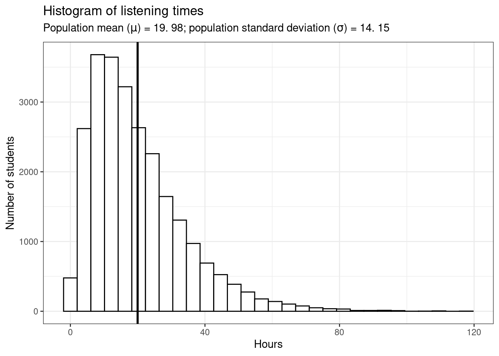
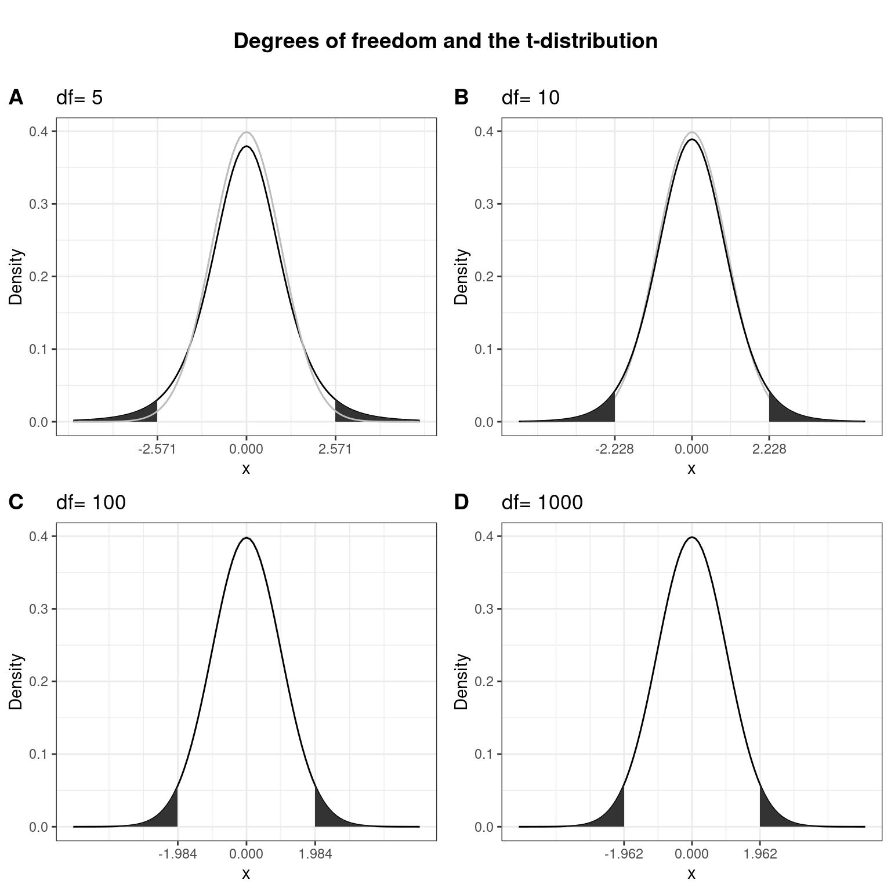
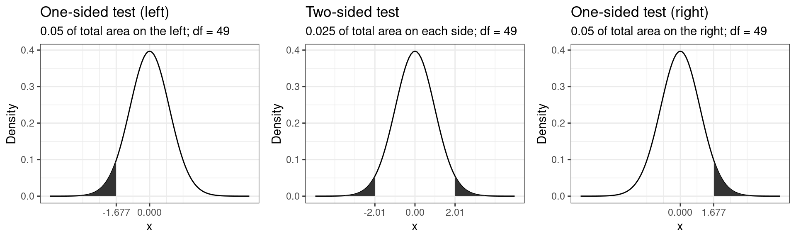
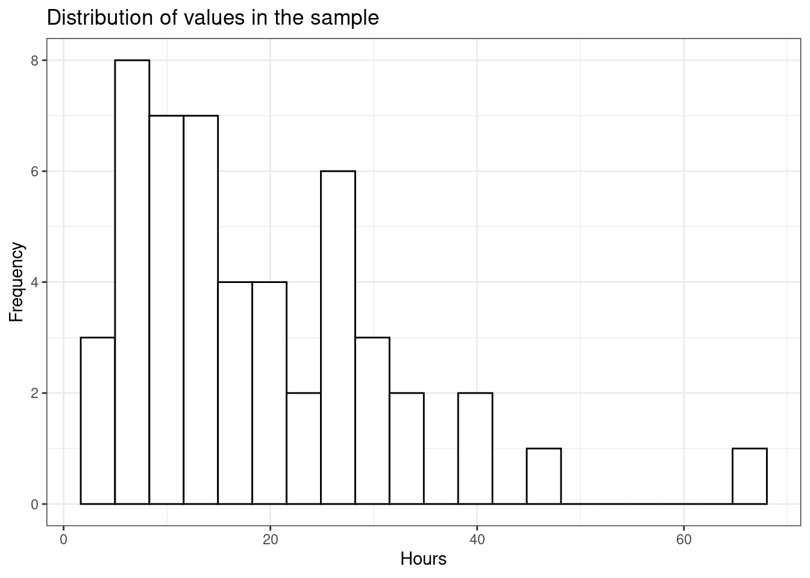
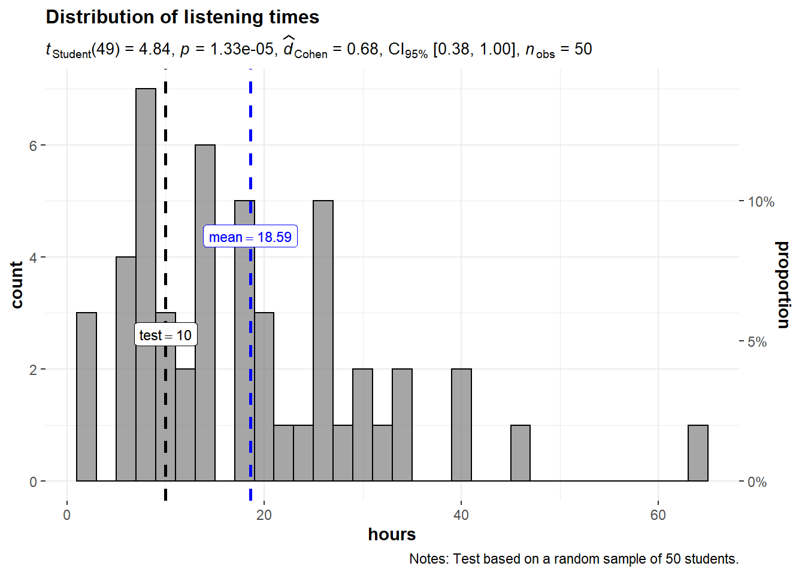
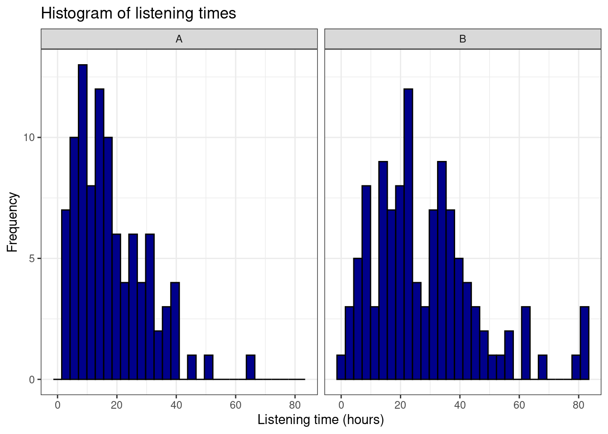
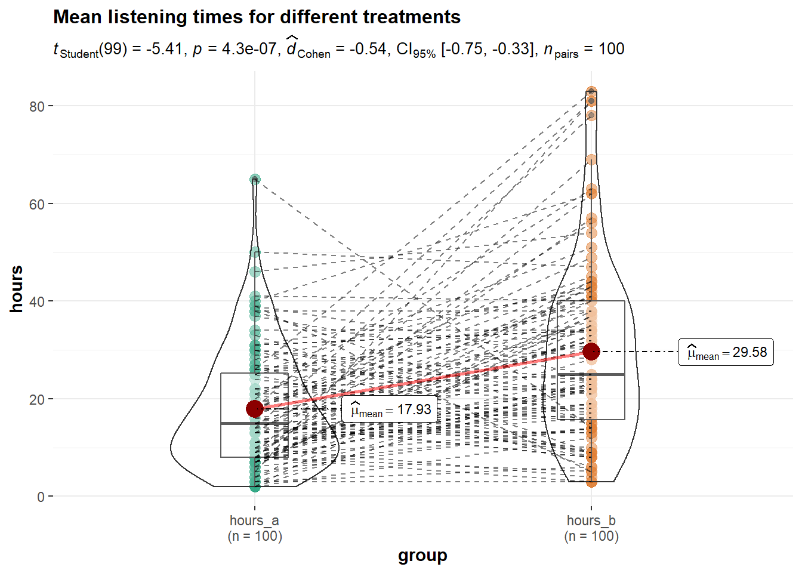

6 Hypothesis testing
6.1 Introduction
We test hypotheses because we are confined to taking samples – we rarely work with the entire population. In the previous chapter, we introduced the standard error (i.e., the standard deviation of a large number of hypothetical samples) as an estimate of how well a particular sample represents the population. We also saw how we can construct confidence intervals around the sample mean \(\bar x\) by computing \(SE_{\bar x}\) as an estimate of \(\sigma_{\bar x}\) using \(s\) as an estimate of \(\sigma\) and calculating the 95% CI as \(\bar x \pm 1.96 * SE_{\bar x}\). Although we do not know the true population mean (\(\mu\)), we might have an hypothesis about it and this would tell us how the corresponding sampling distribution looks like. Based on the sampling distribution of the hypothesized population mean, we could then determine the probability of a given sample assuming that the hypothesis is true.
Let us again begin by assuming we know the entire population using the example of music listening times among students from the previous example. As a reminder, the following plot shows the distribution of music listening times in the population of WU students.
library(tidyverse)
library(ggplot2)
library(latex2exp)
set.seed(321)
hours <- rgamma(n = 25000, shape = 2, scale = 10)
ggplot(data.frame(hours)) +
geom_histogram(aes(x = hours), bins = 30, fill='white', color='black') +
geom_vline(xintercept = mean(hours), size = 1) + theme_bw() +
labs(title = "Histogram of listening times",
subtitle = TeX(sprintf("Population mean ($\\mu$) = %.2f; population standard deviation ($\\sigma$) = %.2f",round(mean(hours),2),round(sd(hours),2))),
y = 'Number of students',
x = 'Hours') 
In this example, the population mean (\(\mu\)) is equal to 19.98, and the population standard deviation \(\sigma\) is equal to 14.15.
6.1.1 The null hypothesis
Let us assume that we were planning to take a random sample of 50 students from this population and our hypothesis was that the mean listening time is equal to some specific value \(\mu_0\), say \(10\). This would be our null hypothesis. The null hypothesis refers to the statement that is being tested and is usually a statement of the status quo, one of no difference or no effect. In our example, the null hypothesis would state that there is no difference between the true population mean \(\mu\) and the hypothesized value \(\mu_0\) (in our example \(10\)), which can be expressed as follows:
\[ H_0: \mu = \mu_0 \] When conducting research, we are usually interested in providing evidence against the null hypothesis. If we then observe sufficient evidence against it and our estimate is said to be significant. If the null hypothesis is rejected, this is taken as support for the alternative hypothesis. The alternative hypothesis assumes that some difference exists, which can be expressed as follows:
\[ H_1: \mu \neq \mu_0 \] Accepting the alternative hypothesis in turn will often lead to changes in opinions or actions. Note that while the null hypothesis may be rejected, it can never be accepted based on a single test. If we fail to reject the null hypothesis, it means that we simply haven’t collected enough evidence against the null hypothesis to disprove it. In classical hypothesis testing, there is no way to determine whether the null hypothesis is true. Hypothesis testing provides a means to quantify to what extent the data from our sample is in line with the null hypothesis.
In order to quantify the concept of “sufficient evidence” we look at the theoretical distribution of the sample means given our null hypothesis and the sample standard error. Using the available information we can infer the sampling distribution for our null hypothesis. Recall that the standard deviation of the sampling distribution (i.e., the standard error of the mean) is given by \(\sigma_{\bar x}={\sigma \over \sqrt{n}}\), and thus can be computed as follows:
mean_pop <- mean(hours)
sigma <- sd(hours) #population standard deviation
n <- 50 #sample size
standard_error <- sigma/sqrt(n) #standard error
standard_error## [1] 2.001639Since we know from the central limit theorem that the sampling distribution is normal for large enough samples, we can now visualize the expected sampling distribution if our null hypothesis was in fact true (i.e., if the was no difference between the true population mean and the hypothesized mean of 10).

We also know that 95% of the probability is within 1.96 standard deviations from the mean. Values higher than that are rather unlikely, if our hypothesis about the population mean was indeed true. This is shown by the shaded area, also known as the “rejection region.” To test our hypothesis that the population mean is equal to \(10\), let us take a random sample from the population.
set.seed(12567)
H_0 <- 10
student_sample <- sample(1:25000, size = 50, replace = FALSE)
music_listening_sample <- data.frame(hours = hours[student_sample])
mean_sample <- mean(music_listening_sample$hours)
ggplot(music_listening_sample) +
geom_histogram(aes(x = hours), fill = 'white', color = 'black', bins = 20) +
theme_bw() + geom_vline(xintercept = mean_sample, color = 'black', size=1) +
labs(title = TeX(sprintf("Distribution of values in the sample ($n =$ %.0f, $\\bar{x] = $ %.2f, s = %.2f)",n,mean_sample,sd(music_listening_sample$hours))),x = "Hours", y = "Frequency") 
The mean listening time in the sample (black line) \(\bar x\) is 18.59. We can already see from the graphic above that such a value is rather unlikely under the hypothesis that the population mean is \(10\). Intuitively, such a result would therefore provide evidence against our null hypothesis. But how could we quantify specifically how unlikely it is to obtain such a value and decide whether or not to reject the null hypothesis? Significance tests can be used to provide answers to these questions.
6.1.2 Statistical inference on a sample
6.1.2.1 Test statistic
6.1.2.1.1 z-scores
Let’s go back to the sampling distribution above. We know that 95% of all values will fall within 1.96 standard deviations from the mean. So if we could express the distance between our sample mean and the null hypothesis in terms of standard deviations, we could make statements about the probability of getting a sample mean of the observed magnitude (or more extreme values). Essentially, we would like to know how many standard deviations (\(\sigma_{\bar x}\)) our sample mean (\(\bar x\)) is away from the population mean if the null hypothesis was true (\(\mu_0\)). This can be formally expressed as follows:
\[ \bar x- \mu_0 = z \sigma_{\bar x} \]
In this equation, z will tell us how many standard deviations the sample mean \(\bar x\) is away from the null hypothesis \(\mu_0\). Solving for z gives us:
\[ z = {\bar x- \mu_0 \over \sigma_{\bar x}}={\bar x- \mu_0 \over \sigma / \sqrt{n}} \]
This standardized value (or “z-score”) is also referred to as a test statistic. Let’s compute the test statistic for our example above:
z_score <- (mean_sample - H_0)/(sigma/sqrt(n))
z_score## [1] 4.292454To make a decision on whether the difference can be deemed statistically significant, we now need to compare this calculated test statistic to a meaningful threshold. In order to do so, we need to decide on a significance level \(\alpha\), which expresses the probability of finding an effect that does not actually exist (i.e., Type I Error). You can find a detailed discussion of this point at the end of this chapter. For now, we will adopt the widely accepted significance level of 5% and set \(\alpha\) to 0.05. The critical value for the normal distribution and \(\alpha\) = 0.05 can be computed using the qnorm() function as follows:
z_crit <- qnorm(0.975)
z_crit## [1] 1.959964We use 0.975 and not 0.95 since we are running a two-sided test and need to account for the rejection region at the other end of the distribution. Recall that for the normal distribution, 95% of the total probability falls within 1.96 standard deviations of the mean, so that higher (absolute) values provide evidence against the null hypothesis. Generally, we speak of a statistically significant effect if the (absolute) calculated test statistic is larger than the (absolute) critical value. We can easily check if this is the case in our example:
abs(z_score) > abs(z_crit)## [1] TRUESince the absolute value of the calculated test statistic is larger than the critical value, we would reject \(H_0\) and conclude that the true population mean \(\mu\) is significantly different from the hypothesized value \(\mu_0 = 10\).
6.1.2.1.2 t-statistic
You may have noticed that the formula for the z-score above assumes that we know the true population standard deviation (\(\sigma\)) when computing the standard deviation of the sampling distribution (\(\sigma_{\bar x}\)) in the denominator. However, the population standard deviation is usually not known in the real world and therefore represents another unknown population parameter which we have to estimate from the sample. We saw in the previous chapter that we usually use \(s\) as an estimate of \(\sigma\) and \(SE_{\bar x}\) as and estimate of \(\sigma_{\bar x}\). Intuitively, we should be more conservative regarding the critical value that we used above to assess whether we have a significant effect to reflect this uncertainty about the true population standard deviation. That is, the threshold for a “significant” effect should be higher to safeguard against falsely claiming a significant effect when there is none. If we replace \(\sigma_{\bar x}\) by it’s estimate \(SE_{\bar x}\) in the formula for the z-score, we get a new test statistic (i.e, the t-statistic) with its own distribution (the t-distribution):
\[ t = {\bar x- \mu_0 \over SE_{\bar x}}={\bar x- \mu_0 \over s / \sqrt{n}} \]
Here, \(\bar X\) denotes the sample mean and \(s\) the sample standard deviation. The t-distribution has more probability in its “tails,” i.e. farther away from the mean. This reflects the higher uncertainty introduced by replacing the population standard deviation by its sample estimate. Intuitively, this is particularly relevant for small samples, since the uncertainty about the true population parameters decreases with increasing sample size. This is reflected by the fact that the exact shape of the t-distribution depends on the degrees of freedom, which is the sample size minus one (i.e., \(n-1\)). To see this, the following graph shows the t-distribution with different degrees of freedom for a two-tailed test and \(\alpha = 0.05\). The grey curve shows the normal distribution.

Notice that as \(n\) gets larger, the t-distribution gets closer and closer to the normal distribution, reflecting the fact that the uncertainty introduced by \(s\) is reduced. To summarize, we now have an estimate for the standard deviation of the distribution of the sample mean (i.e., \(SE_{\bar x}\)) and an appropriate distribution that takes into account the necessary uncertainty (i.e., the t-distribution). Let us now compute the t-statistic according to the formula above:
SE <- (sd(music_listening_sample$hours)/sqrt(n))
t_score <- (mean_sample - H_0)/SE
t_score## [1] 4.84204Notice that the value of the t-statistic is higher compared to the z-score (4.29). This can be attributed to the fact that by using the \(s\) as and estimate of \(\sigma\), we underestimate the true population standard deviation. Hence, the critical value would need to be larger to adjust for this. This is what the t-distribution does. Let us compute the critical value from the t-distribution with n - 1degrees of freedom.
df = n - 1
t_crit <- qt(0.975, df = df)
t_crit## [1] 2.009575Again, we use 0.975 and not 0.95 since we are running a two-sided test and need to account for the rejection region at the other end of the distribution. Notice that the new critical value based on the t-distributionis larger, to reflect the uncertainty when estimating \(\sigma\) from \(s\). Now we can see that the calculated test statistic is still larger than the critical value.
abs(t_score) > abs(t_crit)## [1] TRUEThe following graphics shows that the calculated test statistic (red line) falls into the rejection region so that in our example, we would reject the null hypothesis that the true population mean is equal to \(10\).

Decision: Reject \(H_0\), given that the calculated test statistic is larger than critical value.
Something to keep in mind here is the fact the test statistic is a function of the sample size. This, as \(n\) gets large, the test statistic gets larger as well and we are more likely to find a significant effect. This reflects the decrease in uncertainty about the true population mean as our sample size increases.
6.1.2.2 P-values
In the previous section, we computed the test statistic, which tells us how close our sample is to the null hypothesis. The p-value corresponds to the probability that the test statistic would take a value as extreme or more extreme than the one that we actually observed, assuming that the null hypothesis is true. It is important to note that this is a conditional probability: we compute the probability of observing a sample mean (or a more extreme value) conditional on the assumption that the null hypothesis is true. The pnorm()function can be used to compute this probability. It is the cumulative probability distribution function of the `normal distribution. Cumulative probability means that the function returns the probability that the test statistic will take a value less than or equal to the calculated test statistic given the degrees of freedom. However, we are interested in obtaining the probability of observing a test statistic larger than or equal to the calculated test statistic under the null hypothesis (i.e., the p-value). Thus, we need to subtract the cumulative probability from 1. In addition, since we are running a two-sided test, we need to multiply the probability by 2 to account for the rejection region at the other side of the distribution.
p_value <- 2*(1-pt(abs(t_score), df = df))
p_value## [1] 0.00001326885This value corresponds to the probability of observing a mean equal to or larger than the one we obtained from our sample, if the null hypothesis was true. As you can see, this probability is very low. A small p-value signals that it is unlikely to observe the calculated test statistic under the null hypothesis. To decide whether or not to reject the null hypothesis, we would now compare this value to the level of significance (\(\alpha\)) that we chose for our test. For this example, we adopt the widely accepted significance level of 5%, so any test results with a p-value < 0.05 would be deemed statistically significant. Note that the p-value is directly related to the value of the test statistic. The relationship is such that the higher (lower) the value of the test statistic, the lower (higher) the p-value.
Decision: Reject \(H_0\), given that the p-value is smaller than 0.05.
6.1.2.3 Confidence interval
For a given statistic calculated for a sample of observations (e.g., listening times), a 95% confidence interval can be constructed such that in 95% of samples, the true value of the true population mean will fall within its limits. If the parameter value specified in the null hypothesis (here \(10\)) does not lie within the bounds, we reject \(H_0\). Building on what we learned about confidence intervals in the previous chapter, the 95% confidence interval based on the t-distribution can be computed as follows:
\[ CI_{lower} = {\bar x} - t_{1-{\alpha \over 2}} * SE_{\bar x} \\ CI_{upper} = {\bar x} + t_{1-{\alpha \over 2}} * SE_{\bar x} \]
It is easy to compute this interval manually:
ci_lower <- (mean_sample)-qt(0.975, df = df)*SE
ci_upper <- (mean_sample)+qt(0.975, df = df)*SE
ci_lower## [1] 15.02606ci_upper## [1] 22.15783The interpretation of this interval is as follows: if we would (hypothetically) take 100 samples and calculated the mean and confidence interval for each of them, then the true population mean would be included in 95% of these intervals. The CI is informative when reporting the result of your test, since it provides an estimate of the uncertainty associated with the test result. From the test statistic or the p-value alone, it is not easy to judge in which range the true population parameter is located. The CI provides an estimate of this range.
Decision: Reject \(H_0\), given that the parameter value from the null hypothesis (\(10\)) is not included in the interval.
To summarize, you can see that we arrive at the same conclusion (i.e., reject \(H_0\)), irrespective if we use the test statistic, the p-value, or the confidence interval. However, keep in mind that rejecting the null hypothesis does not prove the alternative hypothesis (we can merely provide support for it). Rather, think of the p-value as the chance of obtaining the data we’ve collected assuming that the null hypothesis is true. You should report the confidence interval to provide an estimate of the uncertainty associated with your test results.
6.1.3 Choosing the right test
The test statistic, as we have seen, measures how close the sample is to the null hypothesis and often follows a well-known distribution (e.g., normal, t, or chi-square). To select the correct test, various factors need to be taken into consideration. Some examples are:
- On what scale are your variables measured (categorical vs. continuous)?
- Do you want to test for relationships or differences?
- If you test for differences, how many groups would you like to test?
- For parametric tests, are the assumptions fulfilled?
The previous discussion used a one sample t-test as an example, which requires that variable is measured on an interval or ratio scale. If you are confronted with other settings, the following flow chart provides a rough guideline on selecting the correct test:

Flowchart for selecting an appropriate test (source: McElreath, R. (2016): Statistical Rethinking, p. 2)
For a detailed overview over the different type of tests, please also refer to this overview by the UCLA.
6.1.3.1 Parametric vs. non-parametric tests
A basic distinction can be made between parametric and non-parametric tests. Parametric tests require that variables are measured on an interval or ratio scale and that the sampling distribution follows a known distribution. Non-Parametric tests on the other hand do not require the sampling distribution to be normally distributed (a.k.a. “assumption free tests”). These tests may be used when the variable of interest is measured on an ordinal scale or when the parametric assumptions do not hold. They often rely on ranking the data instead of analyzing the actual scores. By ranking the data, information on the magnitude of differences is lost. Thus, parametric tests are more powerful if the sampling distribution is normally distributed. In this chapter, we will first focus on parametric tests and cover non-parametric tests later.
6.1.3.2 One-tailed vs. two-tailed test
For some tests you may choose between a one-tailed test versus a two-tailed test. The choice depends on the hypothesis you specified, i.e., whether you specified a directional or a non-directional hypotheses. In the example above, we used a non-directional hypothesis. That is, we stated that the mean is different from the comparison value \(\mu_0\), but we did not state the direction of the effect. A directional hypothesis states the direction of the effect. For example, we might test whether the population mean is smaller than a comparison value:
\[ H_0: \mu \ge \mu_0 \\ H_1: \mu < \mu_0 \]
Similarly, we could test whether the population mean is larger than a comparison value:
\[ H_0: \mu \le \mu_0 \\ H_1: \mu > \mu_0 \]
Connected to the decision of how to phrase the hypotheses (directional vs. non-directional) is the choice of a one-tailed test versus a two-tailed test. Let’s first think about the meaning of a one-tailed test. Using a significance level of 0.05, a one-tailed test means that 5% of the total area under the probability distribution of our test statistic is located in one tail. Thus, under a one-tailed test, we test for the possibility of the relationship in one direction only, disregarding the possibility of a relationship in the other direction. In our example, a one-tailed test could test either if the mean listening time is significantly larger or smaller compared to the control condition, but not both. Depending on the direction, the mean listening time is significantly larger (smaller) if the test statistic is located in the top (bottom) 5% of its probability distribution.
The following graph shows the critical values that our test statistic would need to surpass so that the difference between the population mean and the comparison value would be deemed statistically significant.

It can be seen that under a one-sided test, the rejection region is at one end of the distribution or the other. In a two-sided test, the rejection region is split between the two tails. As a consequence, the critical value of the test statistic is smaller using a one-tailed test, meaning that it has more power to detect an effect. Having said that, in most applications, we would like to be able catch effects in both directions, simply because we can often not rule out that an effect might exist that is not in the hypothesized direction. For example, if we would conduct a one-tailed test for a mean larger than some specified value but the mean turns out to be substantially smaller, then testing a one-directional hypothesis ($H_0: _0 $) would not allow us to conclude that there is a significant effect because there is not rejection at this end of the distribution.
As we have seen, the process of hypothesis testing consists of various steps:
- Formulate null and alternative hypotheses
- Select an appropriate test
- Choose the level of significance (\(\alpha\))
- Descriptive statistics and data visualization
- Conduct significance test
- Report results and draw a marketing conclusion
In the following, we will go through the individual steps using examples for different tests.
6.2 One sample t-test
The example we used in the introduction was an example of the one sample t-test and we computed all statistics by hand to explain the underlying intuition. When you conduct hypothesis tests using R, you do not need to calculate these statistics by hand, since there are build-in routines to conduct the steps for you. Let us use the same example again to see how you would conduct hypothesis tests in R.
1. Formulate null and alternative hypotheses
The null hypothesis states that there is no difference between the true population mean \(\mu\) and the hypothesized value (i.e., \(10\)), while the alternative hypothesis states the opposite:
\[ H_0: \mu = 10 \\ H_1: \mu \neq 10 \]
2. Select an appropriate test
Because we would like to test if the mean of a variable is different from a specified threshold, the one-sample t-test is appropriate. The assumptions of the test are 1) that the variable is measured using an interval or ratio scale, and 2) that the sampling distribution is normal. Both assumptions are met since 1) listening time is a ratio scale, and 2) we deem the sample size (n = 50) large enough to assume a normal sampling distribution according to the central limit theorem.
3. Choose the level of significance
We choose the conventional 5% significance level.
4. Descriptive statistics and data visualization
Provide descriptive statistics using the describe() function:
library(psych)
psych::describe(student_sample)From this, we can already see that the mean is different from the hypothesized value. The question however remains, whether this difference is significantly different, given the sample size and the variability in the data. Since we only have one continuous variable, we can visualize the distribution in a histogram.
ggplot(music_listening_sample) +
geom_histogram(aes(x = hours), fill = 'white', color = 'black', bins = 20) +
theme_bw() +
labs(title = "Distribution of values in the sample",x = "Hours", y = "Frequency") 
5. Conduct significance test
In the beginning of the chapter, we saw, how you could conduct significance test by hand. However, R has built-in routines that you can use to conduct the analyses. The t.test() function can be used to conduct the test. To test if the listening time among WU students was 10, you can use the following code:
H_0 <- 10
t.test(music_listening_sample$hours, mu = H_0, alternative = 'two.sided')##
## One Sample t-test
##
## data: music_listening_sample$hours
## t = 4.842, df = 49, p-value = 0.00001327
## alternative hypothesis: true mean is not equal to 10
## 95 percent confidence interval:
## 15.02606 22.15783
## sample estimates:
## mean of x
## 18.59194Note that if you would have stated a directional hypothesis (i.e., the mean is either greater or smaller than 10 hours), you could easily amend the code to conduct a one sided test by changing the argument alternativefrom 'two.sided' to either 'less' or 'greater'.
Note that you could also combine the results from the statistical test and the visualization using the ggstatsplot package as follows.
library(ggstatsplot)
gghistostats(
data = music_listening_sample, # dataframe from which variable is to be taken
x = hours, # numeric variable whose distribution is of interest
title = "Distribution of listening times", # title for the plot
caption = "Notes: Test based on a random sample of 50 students.",
type = "parametric", # one sample t-test
conf.level = 0.95, # changing confidence level for effect size
bar.measure = "mix", # what does the bar length denote
test.value = 10, # default value is 0
test.value.line = TRUE, # display a vertical line at test value
effsize.type = "d", # display effect size (Cohen's d in output)
test.value.color = "#0072B2", # color for the line for test value
centrality.para = "mean", # which measure of central tendency is to be plotted
centrality.color = "darkred", # decides color for central tendency line
binwidth = 2, # binwidth value (experiment)
messages = FALSE, # turn off the messages
bf.message = FALSE
)
You may nice some additional output in this plot related to the measure of effect size (Cohen’s d). Don’t worry about it at this stage, we will come back to this later in this chapter.
6. Report results and draw a marketing conclusion
Note that the results are the same as above, when we computed the test by hand. You could summarize the results as follows:
On average, the listening times in our sample were different form 10 hours per month (Mean = 18.59 hours, SE = 1.77). This difference was significant t(49) = 4.842, p < .05 (95% CI = [15.03; 22.16]). Based on this evidence, we can conclude that the mean in our sample is significantly lower compared to the hypothesized population mean of \(10\) hours, providing evidence against the null hypothesis.
Note that in the reporting above, the number 49 in parenthesis refers to the degrees of freedom that are available from the output.
6.3 Comparing two means
In the one-sample test above, we tested the hypothesis that the population mean has some specific value \(\mu_0\) using data from only one sample. In marketing (as in many other disciplines), you will often be confronted with a situation where you wish to compare the means of two groups. For example, you may conduct an experiment and randomly split your sample into two groups, one of which receives a treatment (experimental group) while the other doesn’t (control group). In this case, the units (e.g., participants, products) in each group are different (‘between-subjects design’) and the samples are said to be independent. Hence, we would use a independent-means t-test. If you run an experiment with two experimental conditions and the same units (e.g., participants, products) were observed in both experimental conditions, the sample is said to be dependent in the sense that you have the same units in each group (‘within-subjects design’). In this case, we would need to conduct an dependent-means t-test. Both tests are described in the following sections, beginning with the independent-means t-test.
6.3.1 Independent-means t-test
Using an independent-means t-test, we can compare the means of two possibly different populations. It is, for example, quite common for online companies to test new service features by running an experiment and randomly splitting their website visitors into two groups: one is exposed to the website with the new feature (experimental group) and the other group is not exposed to the new feature (control group). This is a typical A/B-Test scenario.
As an example, imagine that a music streaming service would like to introduce a new playlist feature that let’s their users access playlists created by other users. The goal is to analyze how the new service feature impacts the listening time of users. The service randomly splits a representative subset of their users into two groups and collects data about their listening times over one month. Let’s create a data set to simulate such a scenario.
hours_a_b <- read.table("https://raw.githubusercontent.com/IMSMWU/Teaching/master/MRDA2017/hours_a_b.csv",
sep = ",",
header = TRUE)
head(hours_a_b)This data set contains two variables: the variable hours indicates the music listening times (in hours) and the variable group indicates from which group the observation comes, where ‘A’ refers to the control group (with the standard service) and ‘B’ refers to the experimental group (with the new playlist feature). Let’s first look at the descriptive statistics by group using the describeBy function:
library(psych)
describeBy(hours_a_b$hours, hours_a_b$group)##
## Descriptive statistics by group
## group: A
## vars n mean sd median trimmed mad min max range skew kurtosis se
## X1 1 98 18.11 12.1 15 16.88 10.38 2 65 63 1.08 1.21 1.22
## ------------------------------------------------------------
## group: B
## vars n mean sd median trimmed mad min max range skew kurtosis se
## X1 1 112 28.5 17.97 24.5 26.56 15.57 1 83 82 0.96 0.82 1.7From this, we can already see that there is a difference in means between groups A and B. We can also see that the number of observations is different, as is the standard deviation. The question that we would like to answer is whether there is a significant difference in mean listening times between the groups. Remember that different users are contained in each group (‘between-subjects design’) and that the observations in one group are independent of the observations in the other group. Before we will see how you can easily conduct an independent-means t-test, let’s go over some theory first.
6.3.1.1 Theory
As a starting point, let us label the unknown population mean of group A (control group) in our experiment \(\mu_1\), and that of group B (experimental group) \(\mu_2\). In this setting, the null hypothesis would state that the mean in group A is equal to the mean in group B:
\[ H_0: \mu_1=\mu_2 \]
This is equivalent to stating that the difference between the two groups (\(\delta\)) is zero:
\[ H_0: \mu_1 - \mu_2=0=\delta \]
That is, \(\delta\) is the new unknown population parameter, so that the null and alternative hypothesis become:
\[ H_0: \delta = 0 \\ H_1: \delta \ne 0 \]
Remember that we usually don’t have access to the entire population so that we can not observe \(\delta\) and have to estimate is from a sample statistic, which we define as \(d = \bar x_1-\bar x_2\), i.e., the difference between the sample means from group a (\(\bar x_1\)) and group b (\(\bar x_2\)). But can we really estimate \(d\) from \(\delta\)? Remember from the previous chapter, that we could estimate \(\mu\) from \(\bar x\), because if we (hypothetically) take a larger number of samples, the distribution of the means of these samples (the sampling distribution) will be normally distributed and its mean will be (in the limit) equal to the population mean. It turns out that we can use the same underlying logic here. The above samples were drawn from two different populations with \(\mu_1\) and \(\mu_2\). Let us compute the difference in means between these two populations:
delta_pop <- mean(hours_population_1)-mean(hours_population_2)
delta_pop## [1] -7.422855This means that the true difference between the mean listening times of groups a and b is -7.42. Let us now repeat the exercise from the previous chapter: let us repeatedly draw a large number of \(20,000\) random samples of 100 users from each of these populations, compute the difference (i.e., \(d\), our estimate of \(\delta\)), store the difference for each draw and create a histogram of \(d\).
set.seed(321)
hours_population_1 <- rgamma(25000, shape = 2, scale = 10)
hours_population_2 <- rgamma(25000, shape = 2.5, scale = 11)
samples <- 20000
mean_delta <- matrix(NA, nrow = samples)
for (i in 1:samples){
student_sample <- sample(1:25000, size = 100, replace = FALSE)
mean_delta[i,] <- mean(hours_population_1[student_sample])-mean(hours_population_2[student_sample])
}
ggplot(data.frame(mean_delta)) +
geom_histogram(aes(x = mean_delta), bins = 30, fill='white', color='black') +
theme_bw() +
theme(legend.title = element_blank()) +
geom_vline(aes(xintercept = mean(mean_delta)), size=1) + xlab("d") +
ggtitle(TeX(sprintf("%d samples; $d_{\\bar{x}}$ = %.2f",samples, round(mean(mean_delta),2))))
This gives us the sampling distribution of the mean differences between the samples. You will notice that this distribution follows a normal distribution and is centered around the true difference between the populations. This means that, on average, the difference between two sample means \(d\) is a good estimate of \(\delta\). In our example, the difference between \(\bar x_1\) and \(\bar x_2\) is:
mean_x1 <- mean(hours_a_b[hours_a_b$group=="A","hours"])
mean_x1## [1] 18.11224mean_x2 <- mean(hours_a_b[hours_a_b$group=="B","hours"])
mean_x2## [1] 28.5d <- mean_x1-mean_x2
d ## [1] -10.38776Now that we have \(d\) as an estimate of \(\delta\), how can we find out if the observed difference is significantly different from the null hypothesis (i.e., \(\delta = 0\))?
Recall from the previous section, that the standard deviation of the sampling distribution \(\sigma_{\bar x}\) (i.e., the standard error) gives us indication about the precision of our estimate. Further recall that the standard error can be calculated as \(\sigma_{\bar x}={\sigma \over \sqrt{n}}\). So how can we calculate the standard error of the difference between two population means? According to the variance sum law, to find the variance of the sampling distribution of differences, we merely need to add together the variances of the sampling distributions of the two populations that we are comparing. To find the standard error, we only need to take the square root of the variance (because the standard error is the standard deviation of the sampling distribution and the standard deviation is the square root of the variance), so that we get:
\[ \sigma_{\bar x_1-\bar x_2} = \sqrt{{\sigma_1^2 \over n_1}+{\sigma_2^2 \over n_2}} \]
But recall that we don’t actually know the true population standard deviation, so we use \(SE_{\bar x_1-\bar x_2}\) as an estimate of \(\sigma_{\bar x_1-\bar x_2}\):
\[ SE_{\bar x_1-\bar x_2} = \sqrt{{s_1^2 \over n_1}+{s_2^2 \over n_2}} \]
Hence, for our example, we can calculate the standard error as follows:
n1 <- 98
n2 <- 112
s1 <- var(hours_a_b[hours_a_b$group=="A","hours"])
s1## [1] 146.4924s2 <- var(hours_a_b[hours_a_b$group=="B","hours"])
s2## [1] 322.9189SE_x1_x2 <- sqrt(s1/n1+s2/n2)
SE_x1_x2## [1] 2.092373Recall from above that we can calculate the t-statistic as:
\[ t= {\bar x - \mu_0 \over {s \over \sqrt{n}}} \]
Exchanging \(\bar x\) for \(d\), we get
\[ t= {(\bar{x}_1 - \bar{x}_2) - (\mu_1 - \mu_2) \over {\sqrt{{s_1^2 \over n_1}+{s_2^2 \over n_2}}}} \]
Note that according to our hypothesis \(\mu_1-\mu_2=0\), so that we can calculate the t-statistic as:
t_score <- d/SE_x1_x2
t_score## [1] -4.964581Following the example of our one sample t-test above, we would now need to compare this calculated test statistic to a critical value in order to assess if \(d\) is sufficiently far away from the null hypothesis to be statistically significant. To do this, we would need to know the exact t-distribution, which depends on the degrees of freedom. The problem is that deriving the degrees of freedom in this case is not that obvious. If we were willing to assume that \(\sigma_1=\sigma_2\), the correct t-distribution has \(n_1 -1 + n_2-1\) degrees of freedom (i.e., the sum of the degrees of freedom of the two samples). However, because in real life we don not know if \(\sigma_1=\sigma_2\), we need to account for this additional uncertainty. We will not go into detail here, but R automatically uses a sophisticated approach to correct the degrees of freedom called the Welch’s correction, as we will see in the subsequent application.
6.3.1.2 Application
The section above explained the theory behind the independent-means t-test and showed how to compute the statistics manually. Obviously you don’t have to compute these statistics by hand in this section shows you how to conduct an independent-means t-test in R using the example from above.
1. Formulate null and alternative hypotheses
We wish to analyze whether there is a significant difference in music listening times between groups A and B. So our null hypothesis is that the means from the two populations are the same (i.e., there is no difference), while the alternative hypothesis states the opposite:
\[ H_0: \mu_1=\mu_2\\ H_1: \mu_1 \ne \mu_2 \]
2. Select an appropriate test
Since we have a ratio scaled variable (i.e., listening times) and two independent groups, where the mean of one sample is independent of the group of the second sample (i.e., the groups contain different units), the independent-means t-test is appropriate.
3. Choose the level of significance
We choose the conventional 5% significance level.
4. Descriptive statistics and data visualization
We can compute the descriptive statistics for each group separately, using the describeBy() function:
library(psych)
describeBy(hours_a_b$hours, hours_a_b$group)##
## Descriptive statistics by group
## group: A
## vars n mean sd median trimmed mad min max range skew kurtosis se
## X1 1 98 18.11 12.1 15 16.88 10.38 2 65 63 1.08 1.21 1.22
## ------------------------------------------------------------
## group: B
## vars n mean sd median trimmed mad min max range skew kurtosis se
## X1 1 112 28.5 17.97 24.5 26.56 15.57 1 83 82 0.96 0.82 1.7This already shows us that the mean between groups A and B are different. We can visualize the data using a boxplot and a histogram.
ggplot(hours_a_b, aes(x = group, y = hours)) +
geom_boxplot() +
geom_jitter(alpha = 0.2, color = "red") +
labs(x = "Group", y = "Listening time (hours)") +
ggtitle("Boxplot of listening times") +
theme_bw() 
ggplot(hours_a_b,aes(hours)) +
geom_histogram(col = "black", fill = "darkblue") +
labs(x = "Listening time (hours)", y = "Frequency") +
ggtitle("Histogram of listening times") +
facet_wrap(~group) +
theme_bw()
5. Conduct significance test
To conduct the independent means t-test, we can use the t.test() function:
t.test(hours ~ group, data = hours_a_b, mu = 0, alternative = "two.sided", conf.level = 0.95, var.equal = FALSE)##
## Welch Two Sample t-test
##
## data: hours by group
## t = -4.9646, df = 195.73, p-value = 0.000001494
## alternative hypothesis: true difference in means between group A and group B is not equal to 0
## 95 percent confidence interval:
## -14.514246 -6.261264
## sample estimates:
## mean in group A mean in group B
## 18.11224 28.50000Again, we could combine the results of the statistical test and the visualization using the ggstatsplot package.
library(ggstatsplot)
ggbetweenstats(
data = hours_a_b,
plot.type = "box",
x = group, # 2 groups
y = hours ,
type = "p", # default
effsize.type = "d", # display effect size (Cohen's d in output)
messages = FALSE,
bf.message = FALSE,
mean.ci = TRUE,
title = "Mean listening times for different groups"
)
6. Report results and draw a marketing conclusion
The results showed that listening times were higher in the experimental group (Mean = 28.50, SE = 1.70) compared to the control group (Mean = 18.11, SE = 1.22). This means that the listening times were 10.39 hours higher on average in the experimental group, compared to the control group. An independent-means t-test showed that this difference is significant t(195.73) = 4.96, p < .05 (95% CI = [6.26, 14.51]).
6.3.2 Dependent-means t-test
While the independent-means t-test is used when different units (e.g., participants, products) were assigned to the different condition, the dependent-means t-test is used when there are two experimental conditions and the same units (e.g., participants, products) were observed in both experimental conditions.
Imagine, for example, a slightly different experimental setup for the above experiment. Imagine that we do not assign different users to the groups, but that a sample of 100 users gets to use the music streaming service with the new feature for one month and we compare the music listening times of these users during the month of the experiment with the listening time in the previous month. Let us generate data for this example:
hours_a_b_paired <- read.table("https://raw.githubusercontent.com/IMSMWU/Teaching/master/MRDA2017/hours_a_b_paired.csv",
sep = ",",
header = TRUE)
head(hours_a_b_paired)Note that the data set has almost the same structure as before only that we know have two variables representing the listening times of each user in the month before the experiment and during the month of the experiment when the new feature was tested.
6.3.2.1 Theory
In this case, we want to test the hypothesis that there is no difference in mean the mean listening times between the two months. This can be expressed as follows:
\[ H_0: \mu_D = 0 \\ \] Note that the hypothesis only refers to one population, since both observations come from the same units (i.e., users). To use consistent notation, we replace \(\mu_D\) with \(\delta\) and get:
\[ H_0: \delta = 0 \\ H_1: \delta \neq 0 \]
where \(\delta\) denotes the difference between the observed listening times from the two consecutive months of the same users. As is the previous example, since we do not observe the entire population, we estimate \(\delta\) based on the sample using \(d\), which is the difference in mean listening time between the two months for our sample. Note that we assume that everything else (e.g., number of new releases) remained constant over the two month to keep it simple. We can show as above that the sampling distribution follows a normal distribution with a mean that is (in the limit) the same as the population mean. This means, again, that the difference in sample means is a good estimate for the difference in population means. Let’s compute a new variable \(d\), which is the difference between two month.
hours_a_b_paired$d <- hours_a_b_paired$hours_a - hours_a_b_paired$hours_b
head(hours_a_b_paired)Note that we now have a new variable, which is the difference in listening times (in hours) between the two months. The mean of this difference is:
mean_d <- mean(hours_a_b_paired$d)
mean_d## [1] -11.65Again, we use \(SE_{\bar x}\) as an estimate of \(\sigma_{\bar x}\):
\[ SE_{\bar d}={s \over \sqrt{n}} \] Hence, we can compute the standard error as:
n <- nrow(hours_a_b_paired)
SE_d <- sd(hours_a_b_paired$d)/sqrt(n)
SE_d## [1] 2.151503The test statistic is therefore:
\[ t = {\bar d- \mu_0 \over SE_{\bar d}} \] on 99 (i.e., n-1) degrees of freedom. Now we can compute the t-statistic as follows:
t_score <- mean_d/SE_d
t_score## [1] -5.41482qt(0.975,df=99)## [1] 1.984217Note that in the case of the dependent-means t-test, we only base our hypothesis on one population and hence there is only one population variance. This is because in the dependent sample test, the observations come from the same observational units (i.e., users). Hence, there is no unsystematic variation due to potential differences between users that were assigned to the experimental groups. This means that the influence of unobserved factors (unsystematic variation) relative to the variation due to the experimental manipulation (systematic variation) is not as strong in the dependent-means test compared to the independent-means test and we don’t need to correct for differences in the population variances.
6.3.2.2 Application
Again, we don’t have to compute all this by hand since the t.test(...) function can be used to do it for us. Now we have to use the argument paired=TRUE to let R know that we are working with dependent observations.
1. Formulate null and alternative hypotheses
We would like to the test if there is a difference in music listening times between the two consecutive months, so our null hypothesis is that there is no difference, while the alternative hypothesis states the opposite:
\[ H_0: \mu_D = 0 \\ H_0: \mu_D \ne 0 \]
2. Select an appropriate test
Since we have a ratio scaled variable (i.e., listening times) and two observations of the same group of users (i.e., the groups contain the same units), the dependent-means t-test is appropriate.
3. Choose the level of significance
We choose the conventional 5% significance level.
4. Descriptive statistics and data visualization
We can compute the descriptive statistics for each month separately, using the describe() function:
library(psych)
describe(hours_a_b_paired)This already shows us that the mean between the two months are different. We can visiualize the data using a plot of means, boxplot, and a histogram.
To plot the data, we need to do some restructuring first, since the variables are now stored in two different columns (“hours_a” and “hours_b”). This is also known as the “wide” format. To plot the data we need all observations to be stored in one variable. This is also known as the “long” format. We can use the melt(...) function from the reshape2package to “melt” the two variable into one column to plot the data.
library(reshape2)
hours_a_b_paired_long <- melt(hours_a_b_paired[, c("hours_a", "hours_b")])
names(hours_a_b_paired_long) <- c("group","hours")
head(hours_a_b_paired_long)Now we are ready to plot the data:
ggplot(hours_a_b_paired_long, aes(x = group, y = hours)) +
geom_boxplot() +
geom_jitter(alpha = 0.2, color = "red") +
labs(x = "Group", y = "Listening time (hours)") +
ggtitle("Boxplot of listening times") +
theme_bw() 
ggplot(hours_a_b_paired_long,aes(hours)) +
geom_histogram(col = "black", fill = "darkblue") +
labs(x = "Listening time (hours)", y = "Frequency") +
ggtitle("Histogram of listening times") +
facet_wrap(~group) +
theme_bw()
5. Conduct significance test
To conduct the independent means t-test, we can use the t.test() function with the argument paired = TRUE:
t.test(hours_a_b_paired$hours_a, hours_a_b_paired$hours_b, mu = 0, alternative = "two.sided", conf.level = 0.95, paired=TRUE)##
## Paired t-test
##
## data: hours_a_b_paired$hours_a and hours_a_b_paired$hours_b
## t = -5.4148, df = 99, p-value = 0.00000043
## alternative hypothesis: true difference in means is not equal to 0
## 95 percent confidence interval:
## -15.919048 -7.380952
## sample estimates:
## mean of the differences
## -11.65Again, we could combine the results of the statistical test and the visualization using the ggstatsplot package.
library(ggstatsplot)
ggwithinstats(
data = hours_a_b_paired_long,
x = group,
y = hours,
path.point = FALSE,
path.mean = TRUE,
sort = "descending", # ordering groups along the x-axis based on
sort.fun = median, # values of `y` variable
title = "Mean listening times for different treatments",
messages = FALSE,
bf.message = FALSE,
mean.ci = TRUE,
effsize.type = "d" # display effect size (Cohen's d in output)
)
6. Report results and draw a marketing conclusion
On average, the same users used the service more when it included the new feature (M = 29.58, SE = 1.84) compared to the service without the feature (M = 17.93, SE = 1.21). This difference was significant t(99) = 5.41, p < .05 (95% CI = [7.38, 15.91]).
6.4 NHST considerations
6.4.1 Type I and Type II Errors
When choosing the level of significance (\(\alpha\)). It is important to note that the choice of the significance level affects the type 1 and type 2 error:
- Type I error: When we believe there is a genuine effect in our population, when in fact there isn’t. Probability of type I error (\(\alpha\)) = level of significance.
- Type II error: When we believe that there is no effect in the population, when in fact there is.
This following table shows the possible outcomes of a test (retain vs. reject \(H_0\)), depending on whether \(H_0\) is true or false in reality.
| Retain H0 | Reject H0 | |
|---|---|---|
| H0 is true | Correct decision: 1-α (probability of correct retention); |
Type 1 error: α (level of significance) |
| H0 is false | Type 2 error: β (type 2 error rate) |
Correct decision: 1-β (power of the test) |
6.4.2 Significance level, sample size, power, and effect size
When you plan to conduct an experiment, there are some factors that are under direct control of the researcher:
- Significance level (\(\alpha\)): The probability of finding an effect that does not genuinely exist.
- Sample size (n): The number of observations in each group of the experimental design.
Unlike α and n, which are specified by the researcher, the magnitude of β depends on the actual value of the population parameter. In addition, β is influenced by the effect size (e.g., Cohen’s d), which can be used to determine a standardized measure of the magnitude of an observed effect. The following parameters are affected more indirectly:
- Power (1-β): The probability of finding an effect that does genuinely exists.
- Effect size (d): Standardized measure of the effect size under the alternate hypothesis.
Although β is unknown, it is related to α. For example, if we would like to be absolutely sure that we do not falsely identify an effect which does not exist (i.e., make a type I error), this means that the probability of identifying an effect that does exist (i.e., 1-β) decreases and vice versa. Thus, an extremely low value of α (e.g., α = 0.0001) will result in intolerably high β errors. A common approach is to set α=0.05 and β=0.80.
Unlike the t-value of our test, the effect size (d) is unaffected by the sample size and can be categorized as follows (see Cohen, J. 1988):
- 0.2 (small effect)
- 0.5 (medium effect)
- 0.8 (large effect)
In order to test more subtle effects (smaller effect sizes), you need a larger sample size compared to the test of more obvious effects. In this paper, you can find a list of examples for different effect sizes and the number of observations you need to reliably find an effect of that magnitude. Although the exact effect size is unknown before the experiment, you might be able to make a guess about the effect size (e.g., based on previous studies).
If you wish to obtain a standardized measure of the effect, you may compute the effect size (Cohen’s d) using the cohensD() function from the lsr package. Using the examples from the independent-means t-test above, we would use:
library(lsr)
cohensD(hours ~ group, data = hours_a_b)## [1] 0.6696301According to the thresholds defined above, this effect would be judged to be a small-medium effect.
For the dependent-means t-test, we would use:
cohensD(hours_a_b_paired$hours_a, hours_a_b_paired$hours_b, method="paired")## [1] 0.541482According to the thresholds defined above, this effect would also be judged to be a small-medium effect.
When constructing an experimental design, your goal should be to maximize the power of the test while maintaining an acceptable significance level and keeping the sample as small as possible. To achieve this goal, you may use the pwr package, which let’s you compute n, d, alpha, and power. You only need to specify three of the four input variables to get the fourth.
For example, what sample size do we need (per group) to identify an effect with d = 0.6, α = 0.05, and power = 0.8:
library(pwr)
pwr.t.test(d = 0.6, sig.level = 0.05, power = 0.8, type = c("two.sample"), alternative = c("two.sided"))##
## Two-sample t test power calculation
##
## n = 44.58577
## d = 0.6
## sig.level = 0.05
## power = 0.8
## alternative = two.sided
##
## NOTE: n is number in *each* groupOr we could ask, what is the power of our test with 51 observations in each group, d = 0.6, and α = 0.05:
pwr.t.test(n = 51, d = 0.6, sig.level = 0.05, type = c("two.sample"), alternative = c("two.sided"))##
## Two-sample t test power calculation
##
## n = 51
## d = 0.6
## sig.level = 0.05
## power = 0.850985
## alternative = two.sided
##
## NOTE: n is number in *each* group6.4.3 P-values, stopping rules and p-hacking
From my experience, students tend to place a lot of weight on p-values when interpreting their research findings. It is therefore important to note some points that hopefully help to put the meaning of a “significant” vs. “insignificant” test result into perspective. So what does a significant test result actually tell us?
- The importance of an effect? → No, significance depends on sample size.
- That the null hypothesis is false? → No, it is always false.
- That the null hypothesis is true? → No, it is never true.
It is important to understand what the p-value actually tells you.
A p-value of < 0.05 means that the probability of finding a difference of at least the observed magnitude is less than 5% if the null hypothesis was true. In other words, if there really wouldn’t be a difference between the groups, it tells you the probability of observing the difference that you found in your data (or more extreme differences).
The following points provide some guidance on how to interpret significant and insignificant test results.
Significant result
- Even if the probability of the effect being a chance result is small (e.g., less than .05) it doesn’t necessarily mean that the effect is important.
- Very small and unimportant effects can turn out to be statistically significant if the sample size is large enough.
Insignificant result
- If the probability of the effect occurring by chance is large (greater than .05), the alternative hypothesis is rejected. However, this does not mean that the null hypothesis is true.
- Although an effect might not be large enough to be anything other than a chance finding, it doesn’t mean that the effect is zero.
- In fact, two random samples will always have slightly different means that would deemed to be statistically significant if the samples were large enough.
Thus, you should not base your research conclusion on p-values alone!
It is also crucial to determine the sample size before you run the experiment or before you start your analysis. Why? Consider the following example:
- You run an experiment
- After each respondent you analyze the data and look at the mean difference between the two groups with a t-test
- You stop when you have a significant effect
This is called p-hacking and should be avoided at all costs. Assuming that both groups come from the same population (i.e., there is no difference in the means): What is the likelihood that the result will be significant at some point? In other words, what is the likelihood that you will draw the wrong conclusion from your data that there is an effect, while there is none? This is shown in the following graph using simulated data - the color red indicates significant test results that arise although there is no effect (i.e., false positives).

Figure 6.1: p-hacking (red indicates false positives)
6.5 Comparing several means
6.5.1 Introduction
In the previous section we learned how to compare two means using a t-test. The t-test has some limitations since it only lets you compare two means and you can only use it with one independent variable. However, often we would like to compare means from 3 or more groups. In addition, there may be instances in which you manipulate more than one independent variable. For these applications, ANOVA (ANalysis Of VAriance) can be used. Hence, to conduct ANOVA you need:
- A metric dependent variable (i.e., measured using an interval or ratio scale)
- One or more non-metric (categorical) independent variables (also called factors)
A treatment is a particular combination of factor levels, or categories. So-called one-way ANOVA is used when there is only one categorical variable (factor). In this case, a treatment is the same as a factor level. N-way ANOVA is used with two or more factors. Note that we are only going to talk about a single independent variable in the context of ANOVA on this website. If you have multiple independent variables please refer to the chapter on Regression.
Let’s use an example to see how ANOVA works. Similar to the previous example, imagine that the music streaming service experiments with a recommender system and manipulates the intensity of personalized recommendations using three levels: ‘low,’ ‘medium,’ and ‘high.’ The service randomly assigns 100 users to each condition and records the listening times in hours in the following week. As always, we load and inspect the data first:
hours_abc <- read.table("https://raw.githubusercontent.com/IMSMWU/MRDA2018/master/data/hours_abc.dat",
sep = "\t",
header = TRUE) #read in data
hours_abc$group <- factor(hours_abc$group, levels = c("A","B","C"), labels = c("low", "medium","high")) #convert grouping variable to factor
str(hours_abc) #inspect data## 'data.frame': 300 obs. of 3 variables:
## $ hours: int 18 13 3 13 20 18 18 10 11 20 ...
## $ group: Factor w/ 3 levels "low","medium",..: 1 1 1 1 1 1 1 1 1 1 ...
## $ index: int 1 2 3 4 5 6 7 8 9 10 ...The null hypothesis, typically, is that all means are equal (non-directional hypothesis). Hence, in our case:
\[H_0: \mu_1 = \mu_2 = \mu_3\]
The alternative hypothesis is simply that the means are not all equal, i.e.,
\[H_1: \textrm{Means are not all equal}\]
If you wanted to put this in mathematical notation, you could also write:
\[H_1: \exists {i,j}: {\mu_i \ne \mu_j} \]
To get a first impression if there are any differences in listening times across the experimental groups, we use the describeBy(...) function from the psych package:
library(psych)
describeBy(hours_abc$hours, hours_abc$group) #inspect data##
## Descriptive statistics by group
## group: low
## vars n mean sd median trimmed mad min max range skew kurtosis se
## X1 1 100 14.34 4.62 14 14.36 4.45 3 25 22 -0.03 -0.32 0.46
## ------------------------------------------------------------
## group: medium
## vars n mean sd median trimmed mad min max range skew kurtosis se
## X1 1 100 24.7 5.81 25 24.79 5.93 12 42 30 0.05 0.2 0.58
## ------------------------------------------------------------
## group: high
## vars n mean sd median trimmed mad min max range skew kurtosis se
## X1 1 100 34.99 6.42 34.5 35.02 6.67 17 50 33 -0.05 -0.23 0.64In addition, you should visualize the data using appropriate plots. Appropriate plots in this case would be a plot of means, including the 95% confidence interval around the mean, or a boxplot.
#Plot of mean
library(Rmisc)
library(ggplot2)
mean_data <- summarySE(hours_abc, measurevar="hours", groupvars=c("group"))
ggplot(mean_data,aes(x = group, y = hours)) +
geom_bar(position=position_dodge(1), colour="black", fill = "#CCCCCC", stat="identity", width = 0.65) +
geom_errorbar(position=position_dodge(.9), width=.15, aes(ymin=hours-ci, ymax=hours+ci)) +
theme_bw() +
labs(x = "Group", y = "Average number of hours", title = "Average number of hours by group")+
theme_bw() +
theme(plot.title = element_text(hjust = 0.5,color = "#666666")) 
Figure 5.1: Plot of means
ggplot(hours_abc,aes(x = group, y = hours)) +
geom_boxplot() +
geom_jitter(colour="red", alpha = 0.1) +
theme_bw() +
labs(x = "Group", y = "Average number of hours", title = "Average number of hours by group")+
theme_bw() +
theme(plot.title = element_text(hjust = 0.5,color = "#666666")) Figure 1.5: Boxplot
Note that ANOVA is an omnibus test, which means that we test for an overall difference between groups. Hence, the test will only tell you if the group means are different, but it won’t tell you exactly which groups are different from another.
So why don’t we then just conduct a series of t-tests for all combinations of groups (i.e., “low” vs. “medium,” “low” vs. “high,” “medium” vs. “high”)? The reason is that if we assume each test to be independent, then there is a 5% probability of falsely rejecting the null hypothesis (Type I error) for each test. In our case:
- “low” vs. “medium” (α = 0.05)
- “low” vs. “high” (α = 0.05)
- “medium” vs. “high” (α = 0.05)
This means that the overall probability of making a Type I error is 1-(0.953) = 0.143, since the probability of no Type I error is 0.95 for each of the three tests. Consequently, the Type I error probability would be 14.3%, which is above the conventional standard of 5%. This is also known as the family-wise or experiment-wise error.
6.5.2 Decomposing variance
The basic concept underlying ANOVA is the decomposition of the variance in the data. There are three variance components which we need to consider:
- We calculate how much variability there is overall between scores: Total sum of squares (SST)
- We then calculate how much of this variability can be explained by the model we fit to the data (i.e., how much variability is due to the experimental manipulation): Model sum of squares (SSM)
- … and how much cannot be explained (i.e., how much variability is due to individual differences in performance): Residual sum of squares (SSR)
The following figure shows the different variance components using a generalized data matrix:

The total variation is determined by the variation between the categories (due to our experimental manipulation) and the within-category variation that is due to extraneous factors (e.g., unobserved factors such as the promotion of artists on a social network):
\[SS_T= SS_M+SS_R\]
To get a better feeling how this relates to our data set, we can look at the data in a slightly different way. Specifically, we can use the dcast(...) function from the reshape2 package to convert the data to wide format:
library(reshape2)
dcast(hours_abc, index ~ group, value.var = "hours")In this example, X1 from the generalized data matrix above would refer to the factor level “low,” X2 to the level “medium,” and X3 to the level “high.” Y11 refers to the first data point in the first row (i.e., “13”), Y12 to the second data point in the first row (i.e., “21”), etc.. The grand mean (\(\overline{Y}\)) and the category means (\(\overline{Y}_c\)) can be easily computed:
mean(hours_abc$hours) #grand mean## [1] 24.67667by(hours_abc$hours, hours_abc$group, mean) #category mean## hours_abc$group: low
## [1] 14.34
## ------------------------------------------------------------
## hours_abc$group: medium
## [1] 24.7
## ------------------------------------------------------------
## hours_abc$group: high
## [1] 34.99To see how each variance component can be derived, let’s look at the data again. The following graph shows the individual observations by experimental group:

Figure 1.8: Sum of Squares
6.5.2.1 Total sum of squares
To compute the total variation in the data, we consider the difference between each observation and the grand mean. The grand mean is the mean over all observations in the data set. The vertical lines in the following plot measure how far each observation is away from the grand mean:

Figure 1.9: Total Sum of Squares
The formal representation of the total sum of squares (SST) is:
\[ SS_T= \sum_{i=1}^{N} (Y_i-\bar{Y})^2 \]
This means that we need to subtract the grand mean from each individual data point, square the difference, and sum up over all the squared differences. Thus, in our example, the total sum of squares can be calculated as:
\[ \begin{align} SS_T =&(13−24.67)^2 + (14−24.67)^2 + … + (2−24.67)^2\\ &+(21−24.67)^2 + (18-24.67)^2 + … + (17−24.67)^2\\ &+(30−24.67)^2 + (37−24.67)^2 + … + (28−24.67)^2\\ &=30855.64 \end{align} \]
You could also compute this in R using:
SST <- sum((hours_abc$hours - mean(hours_abc$hours))^2)
SST## [1] 30855.64For the subsequent analyses, it is important to understand the concept behind the degrees of freedom (df). Remember that in order to estimate a population value from a sample, we need to hold something in the population constant. In ANOVA, the df are generally one less than the number of values used to calculate the SS. For example, when we estimate the population mean from a sample, we assume that the sample mean is equal to the population mean. Then, in order to estimate the population mean from the sample, all but one scores are free to vary and the remaining score needs to be the value that keeps the population mean constant. Thus, the degrees of freedom of an estimate can also be thought of as the number of independent pieces of information that went into calculating the estimate. In our example, we used all 300 observations to calculate the sum of square, so the total degrees of freedom (dfT) are:
\[\begin{equation} \begin{split} df_T = N-1=300-1=299 \end{split} \tag{6.1} \end{equation}\]
Why do we subtract 1 from the number of items when computing the degrees of freedom? As mentioned above, the degrees of freedom refer to the number of values that are free to vary in a data set. To understand what this means, imagine that we try to estimate the mean hours of music listening in a population and that mean is 20 hours. We could take different samples from the population and we assume that the sample mean is equal to the population mean. Imagine, we only take three small samples of 3 students each: i) 19, 20, 21, ii) 18, 20, 22, iii) 15, 20, 25. Once you have chosen the first two values in each set, the third item cannot be chosen freely (i.e., it is fixed) because it needs to be the value that gets you to the population mean. Hence, only the first two values are ‘free to vary.’ You can select 19 + 20 or 15 + 25, but once you have chosen the first two values, you must choose a particular value that will give you the population mean you are looking for (i.e., 20 hours). In this case, the degrees of freedom for each set of three numbers is two.
6.5.2.2 Model sum of squares
Now we know that there are 30855.64 units of total variation in our data. Next, we compute how much of the total variation can be explained by the differences between groups (i.e., our experimental manipulation). To compute the explained variation in the data, we consider the difference between the values predicted by our model for each observation (i.e., the group mean) and the grand mean. The group mean refers to the mean value within the experimental group. The vertical lines in the following plot measure how far the predicted value for each observation (i.e., the group mean) is away from the grand mean:

Figure 1.11: Model Sum of Squares
The formal representation of the model sum of squares (SSM) is:
\[ SS_M= \sum_{j=1}^{c} n_j(\bar{Y}_j-\bar{Y})^2 \]
where c denotes the number of categories (experimental groups). This means that we need to subtract the grand mean from each group mean, square the difference, and sum up over all the squared differences. Thus, in our example, the model sum of squares can be calculated as:
\[ \begin{align} SS_M &= 100*(15.47−24.67)^2 + 100*(24.88−24.67)^2 + 100*(33.66−24.67)^2 \\ &= 21321.21 \end{align} \]
You could also compute this manually in R using:
SSM <- sum(100*(by(hours_abc$hours, hours_abc$group, mean) - mean(hours_abc$hours))^2)
SSM## [1] 21321.21In this case, we used the three group means to calculate the sum of squares, so the model degrees of freedom (dfM) are:
\[ df_M= c-1=3-1=2 \]
6.5.2.3 Residual sum of squares
Lastly, we calculate the amount of variation that cannot be explained by our model. In ANOVA, this is the sum of squared distances between what the model predicts for each data point (i.e., the group means) and the observed values. In other words, this refers to the amount of variation that is caused by extraneous factors, such as differences between product characteristics of the products in the different experimental groups. The vertical lines in the following plot measure how far each observation is away from the group mean:

Figure 1.13: Residual Sum of Squares
The formal representation of the residual sum of squares (SSR) is:
\[ SS_R= \sum_{j=1}^{c} \sum_{i=1}^{n} ({Y}_{ij}-\bar{Y}_{j})^2 \]
This means that we need to subtract the group mean from each individual observation, square the difference, and sum up over all the squared differences. Thus, in our example, the model sum of squares can be calculated as:
\[ \begin{align} SS_R =& (13−14.34)^2 + (14−14.34)^2 + … + (2−14.34)^2 \\ +&(21−24.7)^2 + (18−24.7)^2 + … + (17−24.7)^2 \\ +& (30−34.99)^2 + (37−34.99)^2 + … + (28−34.99)^2 \\ =& 9534.43 \end{align} \]
You could also compute this in R using:
SSR <- sum((hours_abc$hours - rep(by(hours_abc$hours, hours_abc$group, mean), each = 100))^2)
SSR## [1] 9534.43In this case, we used the 10 values for each of the SS for each group, so the residual degrees of freedom (dfR) are:
\[ \begin{align} df_R=& (n_1-1)+(n_2-1)+(n_3-1) \\ =&(100-1)+(100-1)+(100-1)=297 \end{align} \]
6.5.2.4 Effect strength
Once you have computed the different sum of squares, you can investigate the effect strength. \(\eta^2\) is a measure of the variation in Y that is explained by X:
\[ \eta^2= \frac{SS_M}{SS_T}=\frac{21321.21}{30855.64}=0.69 \]
To compute this in R:
eta <- SSM/SST
eta## [1] 0.6909988The statistic can only take values between 0 and 1. It is equal to 0 when all the category means are equal, indicating that X has no effect on Y. In contrast, it has a value of 1 when there is no variability within each category of X but there is some variability between categories. You can think of it as the equivalent to the R-squared statistic in regression model since it also represents a measure of the share of explained variance.
6.5.2.5 Test of significance
How can we determine whether the effect of X on Y is significant?
- First, we calculate the fit of the most basic model (i.e., the grand mean)
- Then, we calculate the fit of the “best” model (i.e., the group means)
- A good model should fit the data significantly better than the basic model
- The F-statistic, or F-ratio, compares the amount of systematic variance in the data to the amount of unsystematic variance
The F-statistic uses the ratio of mean square related to X (explained variation) and the mean square related to the error (unexplained variation):
\[\frac{SS_M}{SS_R}\]
However, since these are summed values, their magnitude is influenced by the number of scores that were summed. For example, to calculate SSM we only used the sum of 3 values (the group means), while we used 300 values to calculate SST and SSR, respectively. Thus, we calculate the average sum of squares (“mean square”) to compare the average amount of systematic vs. unsystematic variation by dividing the SS values by the degrees of freedom associated with the respective statistic.
Mean square due to X:
\[ MS_M= \frac{SS_M}{df_M}=\frac{SS_M}{c-1}=\frac{21321.21}{(3-1)} \]
Mean square due to error:
\[ MS_R= \frac{SS_R}{df_R}=\frac{SS_R}{N-c}=\frac{9534.43}{(300-3)} \]
Now, we compare the amount of variability explained by the model (experiment), to the error in the model (variation due to extraneous variables). If the model explains more variability than it can’t explain, then the experimental manipulation has had a significant effect on the outcome (DV). The F-ratio can be derived as follows:
\[ F= \frac{MS_M}{MS_R}=\frac{\frac{SS_M}{c-1}}{\frac{SS_R}{N-c}}=\frac{\frac{21321.21}{(3-1)}}{\frac{9534.43}{(300-3)}}=332.08 \]
You can easily compute this in R:
f_ratio <- (SSM/2)/(SSR/297)
f_ratio## [1] 332.0806Similar to the t-test, the outcome of the significance test will be one of the following:
- If the null hypothesis of equal category means is not rejected, then the independent variable does not have a significant effect on the dependent variable
- If the null hypothesis is rejected, then the effect of the independent variable is significant
To decide which one it is, we proceed as with the t-test. That is, we calculate the test statistic and compare it to the critical value for a given level of confidence. If the calculated test statistic is larger than the critical value, we can reject the null hypothesis of equal group means and conclude that the independent variable has a significant effect on our outcome. In this case, however, the test statistic follows a F distribution (instead of the t-distribution) with (m = c – 1) and (n = N – c) degrees of freedom. This means that the shape of the F-distribution depends on the degrees of freedom. In this case, the shape depends on the degrees of freedom associated with the numerator and denominator used to compute the F-ratio. The following figure shows the shape of the F-distribution for different degrees of freedom:
The F distribution
For 2 and 297 degrees of freedom, the critical value of F is 3.026 for α=0.05. As usual, you can either look up these values in a table or use the appropriate function in R:
f_crit <- qf(.95, df1 = 2, df2 = 297) #critical value
f_crit ## [1] 3.026153f_ratio > f_crit #test if calculated test statistic is larger than critical value## [1] TRUEThe output tells us that the calculated test statistic exceeds the critical value. We can also show the test result visually:

Visual depiction of the test result
Thus, we conclude that because FCAL = 332.08 > FCR = 3.03, H0 is rejected!
Now we can interpret our findings as follows: one or more of the differences between means are statistically significant.
Remember: The ANOVA tests for an overall difference in means between the groups. It doesn’t tell us where the differences between groups lie, e.g., whether group “low” is different from “medium” or “high” is different from “medium” or “high” is different from “low.” To find out which group means exactly differ, we need to use post-hoc procedures, which are described below. However, when the ANOVA tells you that the there is no differences between the means, then you also shouldn’t proceed to conduct post-hoc tests. In other words, you should only proceed to conduct post-hoc tests when you found a significant overall effect in your ANOVA.
Finally, you should report your findings in an appropriate way. You could do this by saying: There was a significant effect of playlists and personalized recommendations on listening times, F(2,297) = 332.08, p < 0.05, \(\eta^2\) = 0.69.
As usual, you don’t have to compute these statistics manually! Luckily, there is a function for ANOVA in R, which does the above calculations for you as we will see in the next section.
6.5.3 One-way ANOVA
6.5.3.1 Basic ANOVA
As already indicated, one-way ANOVA is used when there is only one categorical variable (factor). Before conducting ANOVA, you need to check if the assumptions of the test are fulfilled. The assumptions of ANOVA are discussed in the following sections.
Independence of observations
The observations in the groups should be independent. Because we randomly assigned the listeners to the experimental conditions, this assumption can be assumed to be met.
Distributional assumptions
ANOVA is relatively immune to violations to the normality assumption when sample sizes are large due to the Central Limit Theorem. However, if your sample is small (i.e., n < 30 per group) you may nevertheless want to check the normality of your data, e.g., by using the Shapiro-Wilk test or QQ-Plot. In our example, we have 100 observations in each group which is plenty but let’s create another example with only 10 observations in each group. In the latter case we cannot rely on the Central Limit Theorem and we should test the normality of our data. This can be done using the Shapiro-Wilk Test, which has the Null Hypothesis that the data is normally distributed. Hence, an insignificant test results means that the data can be assumed to be approximately normally distributed:
set.seed(321)
hours_fewobs <- data.frame(hours = c(rnorm(10, 20, 5), rnorm(10, 40, 5), rnorm(10, 60, 5)),
group = c(rep('low', 10), rep('medium', 10), rep('high', 10)))
by(hours_fewobs$hours, hours_fewobs$group, shapiro.test)## hours_fewobs$group: high
##
## Shapiro-Wilk normality test
##
## data: dd[x, ]
## W = 0.9595, p-value = 0.7801
##
## ------------------------------------------------------------
## hours_fewobs$group: low
##
## Shapiro-Wilk normality test
##
## data: dd[x, ]
## W = 0.91625, p-value = 0.3267
##
## ------------------------------------------------------------
## hours_fewobs$group: medium
##
## Shapiro-Wilk normality test
##
## data: dd[x, ]
## W = 0.91486, p-value = 0.3161Since the test result is insignificant for all groups, we can conclude that the data approximately follow a normal distribution.
We could also test the distributional assumptions visually using a Q-Q plot (i.e., quantile-quantile plot). This plot can be used to assess if a set of data plausibly came from some theoretical distribution such as the Normal distribution. Since this is just a visual check, it is somewhat subjective. But it may help us to judge if our assumption is plausible, and if not, which data points contribute to the violation. A Q-Q plot is a scatterplot created by plotting two sets of quantiles against one another. If both sets of quantiles came from the same distribution, we should see the points forming a line that’s roughly straight. In other words, Q-Q plots take your sample data, sort it in ascending order, and then plot them versus quantiles calculated from a theoretical distribution. Quantiles are often referred to as “percentiles” and refer to the points in your data below which a certain proportion of your data fall. Recall, for example, the standard Normal distribution with a mean of 0 and a standard deviation of 1. Since the 50th percentile (or 0.5 quantile) is 0, half the data lie below 0. The 95th percentile (or 0.95 quantile), is about 1.64, which means that 95 percent of the data lie below 1.64. The 97.5th quantile is about 1.96, which means that 97.5% of the data lie below 1.96. In the Q-Q plot, the number of quantiles is selected to match the size of your sample data.
To create the Q-Q plot for the normal distribution, you may use the qqnorm() function, which takes the data to be tested as an argument. Using the qqline() function subsequently on the data creates the line on which the data points should fall based on the theoretical quantiles. If the individual data points deviate a lot from this line, it means that the data is not likely to follow a normal distribution.
qqnorm(hours_fewobs[hours_fewobs$group=="low",]$hours)
qqline(hours_fewobs[hours_fewobs$group=="low",]$hours)
Figure 6.2: Q-Q plot 1
qqnorm(hours_fewobs[hours_fewobs$group=="medium",]$hours)
qqline(hours_fewobs[hours_fewobs$group=="medium",]$hours)
Figure 6.3: Q-Q plot 2
qqnorm(hours_fewobs[hours_fewobs$group=="high",]$hours)
qqline(hours_fewobs[hours_fewobs$group=="high",]$hours)Figure 6.4: Q-Q plot 3
The Q-Q plots suggest an approximately Normal distribution. If the assumption had been violated, you might consider transforming your data or resort to a non-parametric test.
Homogeneity of variance
Let’s return to our original data set with 100 observations in each group for the rest of the analysis.
You can test the homogeneity of variances in R using Levene’s test:
library(car)
leveneTest(hours ~ group, data = hours_abc, center = mean)## Levene's Test for Homogeneity of Variance (center = mean)
## Df F value Pr(>F)
## group 2 4.9678 0.007548 **
## 297
## ---
## Signif. codes: 0 '***' 0.001 '**' 0.01 '*' 0.05 '.' 0.1 ' ' 1The null hypothesis of the test is that the group variances are equal. Thus, if the test result is significant it means that the variances are not equal. If we cannot reject the null hypothesis (i.e., the group variances are not significantly different), we can proceed with the ANOVA as follows:
aov <- aov(hours ~ group, data = hours_abc)
summary(aov)## Df Sum Sq Mean Sq F value Pr(>F)
## group 2 21321 10661 332.1 <2e-16 ***
## Residuals 297 9534 32
## ---
## Signif. codes: 0 '***' 0.001 '**' 0.01 '*' 0.05 '.' 0.1 ' ' 1You can see that the p-value is smaller than 0.05. This means that, if there really was no difference between the population means (i.e., the Null hypothesis was true), the probability of the observed differences (or larger differences) is less than 5%.
To compute η2 from the output, we can extract the relevant sum of squares as follows
summary(aov)[[1]]$'Sum Sq'[1]/(summary(aov)[[1]]$'Sum Sq'[1] + summary(aov)[[1]]$'Sum Sq'[2])## [1] 0.6909988You can see that the results match the results from our manual computation above (\(\eta^2 =\) 0.69).
The aov() function also automatically generates some plots that you can use to judge if the model assumptions are met. We will inspect two of the plots here.
We will use the first plot to inspect if the residual variances are equal across the experimental groups:
plot(aov,1)
Generally, the residual variance (i.e., the range of values on the y-axis) should be the same for different levels of our independent variable. The plot shows, that there are some slight differences. Notably, the range of residuals is higher in group “medium” than in group “high.” However, the differences are not that large and since the Levene’s test could not reject the Null of equal variances, we conclude that the variances are similar enough in this case.
The second plot can be used to test the assumption that the residuals are approximately normally distributed. We use a Q-Q plot to test this assumption:
plot(aov,2)
The plot suggests that, the residuals are approximately normally distributed. We could also test this by extracting the residuals from the anova output using the resid() function and using the Shapiro-Wilk test:
shapiro.test(resid(aov))##
## Shapiro-Wilk normality test
##
## data: resid(aov)
## W = 0.99723, p-value = 0.8925Confirming the impression from the Q-Q plot, we cannot reject the Null that the residuals are approximately normally distributed.
Note that if Levene’s test would have been significant (i.e., variances are not equal), we would have needed to either resort to non-parametric tests (see below), or compute the Welch’s F-ratio instead, which is correcting for unequal variances between the groups:
#oneway.test(hours ~ group, hours_abc)You can see that the results are fairly similar, since the variances turned out to be fairly equal across groups.
6.5.3.2 Post-hoc tests
Provided that significant differences were detected by the overall ANOVA you can find out which group means are different using post-hoc procedures. Post-hoc procedures are designed to conduct pairwise comparisons of all different combinations of the treatment groups by correcting the level of significance for each test such that the overall Type I error rate (α) across all comparisons remains at 0.05.
In other words, we rejected H0: μlow= μmedium= μhigh, and now we would like to test:
Test1:
\[H_0: \mu_{low} = \mu_{medium}\]
Test2:
\[H_0: \mu_{low} = \mu_{high}\]
Test3:
\[H_0: \mu_{medium} = \mu_{high}\]
There are several post-hoc procedures available to choose from. In this tutorial, we will cover Bonferroni and Tukey’s HSD (“honest significant differences”). Both tests control for family-wise error. Bonferroni tends to have more power when the number of comparisons is small, whereas Tukey’s HSDs is better when testing large numbers of means.
6.5.3.2.1 Bonferroni
One of the most popular (and easiest) methods to correct for the family-wise error rate is to conduct the individual t-tests and divide α by the number of comparisons („k“):
\[ p_{CR}= \frac{\alpha}{k} \]
In our example with three groups:
\[p_{CR}= \frac{0.05}{3}=0.017\]
Thus, the “corrected” critical p-value is now 0.017 instead of 0.05 (i.e., the critical t value is higher). This means that the test is more conservative to account for the family-wise error. Remember that, to reject the null hypothesis at a 5% significance level, we usually check if the p-value in our analysis is smaller than 0.05. The corrected p-value above requires us to obtain a p-value smaller than 0.017 in order to reject the null hypothesis at the 5% significance level, which means that the critical value of the test statistic is higher. You can implement the Bonferroni procedure in R using:
bonferroni <- pairwise.t.test(hours_abc$hours, hours_abc$group, data = hours_abc, p.adjust.method = "bonferroni")
bonferroni##
## Pairwise comparisons using t tests with pooled SD
##
## data: hours_abc$hours and hours_abc$group
##
## low medium
## medium <2e-16 -
## high <2e-16 <2e-16
##
## P value adjustment method: bonferroniIn the output, you will get the corrected p-values for the individual tests. This mean, to reject the null hypothesis, we require the p-value to be smaller than 0.05 again, since the reported p-values are already corrected for the family-wise error. In our example, we can reject H0 of equal means for all three tests, since p < 0.05 for all combinations of groups.
Note the difference between the results from the post-hoc test compared to individual t-tests. For example, when we test the “medium” vs. “high” groups, the result from a t-test would be:
data_subset <- subset(hours_abc, group != "low")
ttest <- t.test(hours ~ group, data = data_subset, var.equal= TRUE)
ttest##
## Two Sample t-test
##
## data: hours by group
## t = -11.884, df = 198, p-value < 2.2e-16
## alternative hypothesis: true difference in means between group medium and group high is not equal to 0
## 95 percent confidence interval:
## -11.997471 -8.582529
## sample estimates:
## mean in group medium mean in group high
## 24.70 34.99Usually the p-value is lower in the t-test, reflecting the fact that the family-wise error is not corrected (i.e., the test is less conservative). In this case the p-value is extremely small in both cases and thus indistinguishable.
6.5.3.2.2 Tukey’s HSD
Tukey’s HSD also compares all possible pairs of means (two-by-two combinations; i.e., like a t-test, except that it corrects for family-wise error rate).
Test statistic:
\[\begin{equation} \begin{split} HSD= q\sqrt{\frac{MS_R}{n_c}} \end{split} \tag{6.2} \end{equation}\]
where:
- q = value from studentized range table (see e.g., here)
- MSR = Mean Square Error from ANOVA
- nc = number of observations per group
- Decision: Reject H0 if
\[|\bar{Y}_i-\bar{Y}_j | > HSD\]
The value from the studentized range table can be obtained using the qtukey() function.
q <- qtukey(0.95, nm = 3, df = 297)
q## [1] 3.331215Hence:
\[HSD= 3.33\sqrt{\frac{33.99}{100}}=1.94\]
Or, in R:
hsd <- q * sqrt(summary(aov)[[1]]$'Mean Sq'[2]/100)
hsd## [1] 1.887434Since all mean differences between groups are larger than 1.906, we can reject the null hypothesis for all individual tests, confirming the results from the Bonferroni test. To compute Tukey’s HSD, we can use the appropriate function from the multcomp package.
library(multcomp)
aov$model$group <- as.factor(aov$model$group)
tukeys <- glht(aov, linfct = mcp(group = "Tukey"))
summary(tukeys)##
## Simultaneous Tests for General Linear Hypotheses
##
## Multiple Comparisons of Means: Tukey Contrasts
##
##
## Fit: aov(formula = hours ~ group, data = hours_abc)
##
## Linear Hypotheses:
## Estimate Std. Error t value Pr(>|t|)
## medium - low == 0 10.3600 0.8013 12.93 <2e-16 ***
## high - low == 0 20.6500 0.8013 25.77 <2e-16 ***
## high - medium == 0 10.2900 0.8013 12.84 <2e-16 ***
## ---
## Signif. codes: 0 '***' 0.001 '**' 0.01 '*' 0.05 '.' 0.1 ' ' 1
## (Adjusted p values reported -- single-step method)confint(tukeys)##
## Simultaneous Confidence Intervals
##
## Multiple Comparisons of Means: Tukey Contrasts
##
##
## Fit: aov(formula = hours ~ group, data = hours_abc)
##
## Quantile = 2.3558
## 95% family-wise confidence level
##
##
## Linear Hypotheses:
## Estimate lwr upr
## medium - low == 0 10.3600 8.4723 12.2477
## high - low == 0 20.6500 18.7623 22.5377
## high - medium == 0 10.2900 8.4023 12.1777We may also plot the result for the mean differences incl. their confidence intervals:
plot(tukeys)
Figure 4.6: Tukey’s HSD
You can see that the CIs do not cross zero, which means that the true difference between group means is unlikely zero. It is sufficient to report the results in the way described above. However, you could also manually compute the differences between the groups and their confidence interval as follows:
mean1 <- mean(hours_abc[hours_abc$group=="low","hours"]) #mean group "low"
mean1## [1] 14.34mean2 <- mean(hours_abc[hours_abc$group=="medium","hours"]) #mean group "medium"
mean2## [1] 24.7mean3 <- mean(hours_abc[hours_abc$group=="high","hours"]) #mean group "high"
mean3## [1] 34.99#CI high vs. medium
mean_diff_high_med <- mean2-mean1
mean_diff_high_med## [1] 10.36ci_med_high_lower <- mean_diff_high_med-hsd
ci_med_high_upper <- mean_diff_high_med+hsd
ci_med_high_lower## [1] 8.472566ci_med_high_upper## [1] 12.24743#CI high vs.low
mean_diff_high_low <- mean3-mean1
mean_diff_high_low## [1] 20.65ci_low_high_lower <- mean_diff_high_low-hsd
ci_low_high_upper <- mean_diff_high_low+hsd
ci_low_high_lower## [1] 18.76257ci_low_high_upper## [1] 22.53743#CI medium vs.low
mean_diff_med_low <- mean3-mean2
mean_diff_med_low## [1] 10.29ci_low_med_lower <- mean_diff_med_low-hsd
ci_low_med_upper <- mean_diff_med_low+hsd
ci_low_med_lower## [1] 8.402566ci_low_med_upper## [1] 12.17743The results of a post-hoc test can be reported as follows:
The post-hoc tests based on Bonferroni and Tukey’s HSD revealed that users listened to music significantly more when the intensity of personalized recommendations was increased. This is true for “low” vs. “medium” intensity, as well as for “low” vs. “high” and “medium” vs. “high” intensity.
As with the t-test, you could also use the functions contained in the ggstatsplot package to combine a visual depiction of the data with the results of statistical tests. In the case of an ANOVA, the output would also include the pairwise comparisons.
library(ggstatsplot)
ggbetweenstats(
data = hours_abc,
x = group,
y = hours,
plot.type = "box",
pairwise.comparisons = TRUE,
pairwise.annotation = "p.value",
p.adjust.method = "bonferroni",
effsize.type = "eta",
var.equal = FALSE,
mean.plotting = TRUE, # whether mean for each group is to be displayed
mean.ci = TRUE, # whether to display confidence interval for means
mean.label.size = 2.5, # size of the label for mean
type = "parametric", # which type of test is to be run
k = 3, # number of decimal places for statistical results
outlier.label.color = "darkgreen", # changing the color for the text label
title = "Comparison of listening times between groups",
xlab = "Experimental group", # label for the x-axis variable
ylab = "Listening time", # label for the y-axis variable
messages = FALSE,
bf.message = FALSE
)Figure 4.8: ANOVA using ggstatsplot
##
## Attaching package: 'dplyr'## The following objects are masked from 'package:stats':
##
## filter, lag## The following objects are masked from 'package:base':
##
## intersect, setdiff, setequal, union##
## Attaching package: 'ggplot2'## The following objects are masked from 'package:psych':
##
## %+%, alpha## Loading required package: lattice## Loading required package: survival## Loading required package: Formula##
## Attaching package: 'Hmisc'## The following object is masked from 'package:psych':
##
## describe## The following objects are masked from 'package:dplyr':
##
## src, summarize## The following objects are masked from 'package:base':
##
## format.pval, units6.6 Non-parametric tests
Non-Parametric tests do not require the sampling distribution to be normally distributed (a.k.a. “assumption free tests”). These tests may be used when the variable of interest is measured on an ordinal scale or when the parametric assumptions do not hold. They often rely on ranking the data instead of analyzing the actual scores. By ranking the data, information on the magnitude of differences is lost. Thus, parametric tests are more powerful if the sampling distribution is normally distributed and you have a continuous variable.
When should you use non-parametric tests?
- When your DV is measured on an ordinal scale
- When your data is better represented by the median (e.g., there are outliers that you can’t remove)
- When the assumptions of parametric tests are not met (e.g., normally distributed sampling distribution)
- You have a very small sample size (i.e., the central limit theorem does not apply)
In these cases, you should resort to the non-parametric equivalent of the tests we have discussed so far, as summarized in the following table.
| Parametric test | Non-parametric equivalent |
|---|---|
| Independent-means t-test | Mann-Whitney U Test |
| Dependent-means t-test | Wilcoxon signed-rank test |
| ANOVA | Kruskal-Wallis test |
These non-parametric tests will be briefly discussed in the following sections.
6.6.1 Mann-Whitney U Test (a.k.a. Wilcoxon rank-sum test)
The Mann-Whitney U test is a non-parametric test of differences between groups (i.e., it is the non-parametric equivalent of the independent-means t-test). In contrast to the independent-means t-test it only requires ordinally scaled data and relies on weaker assumptions. Thus it is often useful if the assumptions of the t-test are violated, especially if the data is not on a continuous scale. The following assumptions must be fulfilled for the test to be applicable:
- The dependent variable is at least ordinally scaled (i.e. a ranking between values can be established)
- The independent variable has only two levels
- A between-subjects design is used (i.e., the subjects are not matched across conditions)
Intuitively, the test compares the frequency of low and high ranks between groups. Under the null hypothesis, the amount of high and low ranks should be roughly equal in the two groups. This is achieved through comparing the expected sum of ranks to the actual sum of ranks.
As an example, we will be using data obtained from a field experiment with random assignment. In a music download store, new releases were randomly assigned to an experimental group and sold at a reduced price (i.e., 7.95€), or a control group and sold at the standard price (9.95€). A representative sample of 102 new releases were sampled and these albums were randomly assigned to the experimental groups (i.e., 51 albums per group). The sales were tracked over one day.
Let’s load and investigate the data first:
library(psych)
library(ggplot2)
rm(music_sales)
music_sales <- read.table("https://raw.githubusercontent.com/IMSMWU/Teaching/master/MRDA2017/music_experiment.dat",
sep = "\t",
header = TRUE) #read in data
music_sales$group <- factor(music_sales$group, levels = c(1:2), labels = c("low_price", "high_price")) #convert grouping variable to factor
str(music_sales) #inspect data## 'data.frame': 102 obs. of 3 variables:
## $ product_id: int 1 2 3 4 5 6 7 8 9 10 ...
## $ unit_sales: int 6 27 30 24 21 11 18 15 18 13 ...
## $ group : Factor w/ 2 levels "low_price","high_price": 1 1 1 1 1 1 1 1 1 1 ...head(music_sales) #inspect dataInspect descriptives (overall and by group).
psych::describe(music_sales$unit_sales) #overall descriptives## vars n mean sd median trimmed mad min max range skew kurtosis se
## X1 1 102 7.12 6.26 6 6.1 4.45 0 30 30 1.71 3.02 0.62describeBy(music_sales$unit_sales, music_sales$group) #descriptives by group##
## Descriptive statistics by group
## group: low_price
## vars n mean sd median trimmed mad min max range skew kurtosis se
## X1 1 51 8.37 6.44 6 7.17 4.45 2 30 28 1.66 2.22 0.9
## ------------------------------------------------------------
## group: high_price
## vars n mean sd median trimmed mad min max range skew kurtosis se
## X1 1 51 5.86 5.87 3 4.9 4.45 0 30 30 1.84 4.1 0.82In the case of non-parametric tests, the data is better represented by the median (compared to the mean). Thus, we will visualize the data using a boxplot.
ggplot(music_sales,aes(x = group, y = unit_sales)) +
geom_boxplot() +
geom_jitter(colour="red", alpha = 0.1) +
theme_bw() +
labs(x = "Group", y = "Sales", title = "Sales by group")+
theme_bw() +
theme(plot.title = element_text(hjust = 0.5,color = "#666666")) Figure 1.3: Boxplot
Let’s assume that one of the parametric assumptions has been violated and we needed to conduct a non-parametric test. Then, the Mann-Whitney U test is implemented in R using the function wilcox.test(). Using the ranking data as an independent variable and the listening time as a dependent variable, the test could be executed as follows:
wilcox.test(unit_sales ~ group, data = music_sales) #Mann-Whitney U Test##
## Wilcoxon rank sum test with continuity correction
##
## data: unit_sales by group
## W = 1710, p-value = 0.005374
## alternative hypothesis: true location shift is not equal to 0The p-value is smaller than 0.05, which leads us to reject the null hypothesis, i.e. the test yields evidence that the new service feature leads to higher music listening times.
Alternatively, you could also use the ggstatsplot package to obtain the result of the test by specifying the argument type = "nonparametric" as follows:
library(ggstatsplot)
ggbetweenstats(
data = music_sales,
plot.type = "box",
x = group, # 2 groups
y = unit_sales ,
type = "nonparametric",
effsize.type = "r", # display effect size (Cohen's d in output)
messages = FALSE,
bf.message = FALSE,
mean.ci = TRUE,
title = "Mean sales for different groups"
)Figure 5.1: Mann-Whitney U Test using ggstatsplot
6.6.2 Wilcoxon signed-rank test
The Wilcoxon signed-rank test is a non-parametric test used to analyze the difference between paired observations, analogously to the dependent-means t-test. It can be used when measurements come from the same observational units but the distributional assumptions of the dependent-means t-test do not hold, because it does not require any assumptions about the distribution of the measurements. Since we subtract two values, however, the test requires that the dependent variable is at least interval scaled, meaning that intervals have the same meaning for different points on our measurement scale.
Under the null hypothesis \(H_0\), the differences of the measurements should follow a symmetric distribution around 0, meaning that, on average, there is no difference between the two matched samples. \(H_1\) states that the distributions mean is non-zero.
As an example, let’s consider a slightly different experimental setup for the music download store. Imagine that new releases were either sold at a reduced price (i.e., 7.95€), or at the standard price (9.95€). Every time a customer came to the store, the prices were randomly determined for every new release. This means that the same 51 albums were either sold at the standard price or at the reduced price and this price was determined randomly. The sales were then recorded over one day. Note the difference to the previous case, where we randomly split the sample and assigned 50% of products to each condition. Now, we randomly vary prices for all albums between high and low prices.
Let’s load and investigate the data first:
rm(music_sales_dep)
music_sales_dep <- read.table("https://raw.githubusercontent.com/IMSMWU/Teaching/master/MRDA2017/music_experiment_dependent.dat",
sep = "\t",
header = TRUE) #read in data
str(music_sales_dep) #inspect data## 'data.frame': 51 obs. of 3 variables:
## $ product_id : int 1 2 3 4 5 6 7 8 9 10 ...
## $ unit_sales_low_price : int 6 27 30 24 21 11 18 15 18 13 ...
## $ unit_sales_high_price: int 9 12 30 18 20 15 2 3 3 9 ...head(music_sales_dep) #inspect dataWe can visualize the data using a boxplot as follows:
library(reshape2)
music_sales_dep_long <- melt(music_sales_dep[, c("unit_sales_low_price", "unit_sales_high_price")])
names(music_sales_dep_long) <- c("group","sales")
head(music_sales_dep_long)ggplot(music_sales_dep_long,aes(x = group, y = sales)) +
geom_boxplot() +
geom_jitter(colour="red", alpha = 0.1) +
theme_bw() +
labs(x = "Group", y = "Average number of sales", title = "Average number of sales by group")+
theme_bw() +
theme(plot.title = element_text(hjust = 0.5,color = "#666666")) Figure 1.6: Boxplot
Again, let’s assume that one of the parametric assumptions has been violated and we needed to conduct a non-parametric test. Then the Wilcoxon signed-rank test can be performed with the same command as the Mann-Whitney U test, provided that the argument paired is set to TRUE.
wilcox.test(music_sales_dep$unit_sales_low_price, music_sales_dep$unit_sales_high_price, paired = TRUE) #Wilcoxon signed-rank test##
## Wilcoxon signed rank test with continuity correction
##
## data: music_sales_dep$unit_sales_low_price and music_sales_dep$unit_sales_high_price
## V = 867.5, p-value = 0.004024
## alternative hypothesis: true location shift is not equal to 0Using the 95% confidence level, the result would suggest a significant effect of price on sales (i.e., p < 0.05).
Again, you could also use the ggstatsplot package to obtain the result of the test by specifying the argument type = "nonparametric" as follows:
library(ggstatsplot)
ggwithinstats(
data = music_sales_dep_long,
x = group,
y = sales,
path.point = FALSE,
type="nonparametric",
sort = "descending", # ordering groups along the x-axis based on
sort.fun = median, # values of `y` variable
title = "Mean sales for different treatments",
messages = FALSE,
bf.message = FALSE,
mean.ci = TRUE,
mean.plotting = F,
effsize.type = "r" # display effect size (Cohen's d in output)
)Figure 1.8: Wilcoxon signed-rank test using ggstatsplot
6.6.3 Kruskal-Wallis test
The Kruskal–Wallis test is the non-parametric counterpart of the one-way ANOVA. It is designed to test for significant differences in population medians when you have more than two groups (with two groups, you would use the Mann-Whitney U-test). The theory is very similar to that of the Mann–Whitney U-test since it is also based on ranked data.
As an example, let’s use a data set containing data from an experiment at an online store where products were randomly assigned to three groups with three different levels of promotion (i.e., “low,” “medium,” “high”) and the sales where recorded for these groups.
online_store_promo <- read.table("https://raw.githubusercontent.com/IMSMWU/Teaching/master/MRDA2017/online_store_promo.dat",
sep = "\t",
header = TRUE) #read in data
online_store_promo$Promotion <- factor(online_store_promo$Promotion, levels = c(1:3), labels = c("high", "medium","low")) #convert grouping variable to factor
head(online_store_promo)To get a first impression, we can plot the data using a boxplot:
#Boxplot
ggplot(online_store_promo,aes(x = Promotion, y = Sales)) +
geom_boxplot() +
geom_jitter(colour="red", alpha = 0.1) +
theme_bw() +
labs(x = "Experimental group (promotion level)", y = "Number of sales", title = "Number of sales by group")+
theme_bw() +
theme(plot.title = element_text(hjust = 0.5,color = "#666666")) Figure 1.10: Boxplot
To test if there is a difference in medians between the groups, we can carry out the Kruskal-Wallis test using the kruskal.test() function:
kruskal.test(Sales ~ Promotion, data = online_store_promo) ##
## Kruskal-Wallis rank sum test
##
## data: Sales by Promotion
## Kruskal-Wallis chi-squared = 16.529, df = 2, p-value = 0.0002575The test-statistic follows a chi-square distribution and since the test is significant (p < 0.05), we can conclude that there are significant differences in population medians. Provided that the overall effect is significant, you may perform a post hoc test to find out which groups are different.
To test for differences between groups, we can, for example, apply post-hoc tests according to Nemenyi for pairwise multiple comparisons of the ranked data using the appropriate function from the PMCMR package.
library(PMCMR)
library(PMCMRplus)
kwAllPairsNemenyiTest(x = online_store_promo$Sales, g = online_store_promo$Promotion, dist = "Tukey")## high medium
## medium 0.09887 -
## low 0.00016 0.11683The results reveal that there is a significant difference between the “low” and “high” promotion groups. Note that the results are different compared to the results from a parametric test, which we could obtain as follows:
pairwise.t.test(online_store_promo$Sales, online_store_promo$Promotion, data = online_store_promo, p.adjust.method = "bonferroni")##
## Pairwise comparisons using t tests with pooled SD
##
## data: online_store_promo$Sales and online_store_promo$Promotion
##
## high medium
## medium 0.0329 -
## low 6.6e-06 0.0092
##
## P value adjustment method: bonferroniThis difference occurs because non-parametric tests have less power to detect differences between groups since we lose information by ranking the data. Thus, you should rely on parametric tests if the assumptions are met.
Again, you could also use the ggstatsplot package to obtain the result of the test by specifying the argument type = "nonparametric" as follows:
library(ggstatsplot)
ggbetweenstats(
data = online_store_promo,
plot.type = "box",
x = Promotion, # 2 groups
y = Sales ,
type = "nonparametric",
messages = FALSE,
title = "Mean sales for different groups"
)Figure 4.1: Kruskal-Wallis test using ggstatsplot
6.7 Categorical data
In some instances, you will be confronted with differences between proportions, rather than differences between means. For example, you may conduct an A/B-Test and wish to compare the conversion rates between two advertising campaigns. In this case, your data is binary (0 = no conversion, 1 = conversion) and the sampling distribution for such data is binomial. While binomial probabilities are difficult to calculate, we can use a Normal approximation to the binomial when n is large (>100) and the true likelihood of a 1 is not too close to 0 or 1.
Let’s use an example: assume a call center where service agents call potential customers to sell a product. We consider two call center agents:
- Service agent 1 talks to 300 customers and gets 200 of them to buy (conversion rate=2/3)
- Service agent 2 talks to 300 customers and gets 100 of them to buy (conversion rate=1/3)
As always, we load the data first:
call_center <- read.table("https://raw.githubusercontent.com/IMSMWU/Teaching/master/MRDA2017/call_center.dat",
sep = "\t",
header = TRUE) #read in data
call_center$conversion <- factor(call_center$conversion , levels = c(0:1), labels = c("no", "yes")) #convert to factor
call_center$agent <- factor(call_center$agent , levels = c(0:1), labels = c("agent_1", "agent_2")) #convert to factorNext, we create a table to check the relative frequencies:
rel_freq_table <- as.data.frame(prop.table(table(call_center), 2)) #conditional relative frequencies
rel_freq_tableWe could also plot the data to visualize the frequencies using ggplot:
ggplot(rel_freq_table, aes(x = agent, y = Freq, fill = conversion)) + #plot data
geom_col(width = .7) + #position
geom_text(aes(label = paste0(round(Freq*100,0),"%")), position = position_stack(vjust = 0.5), size = 4) + #add percentages
ylab("Proportion of conversions") + xlab("Agent") + # specify axis labels
theme_bw()Figure 1.16: proportion of conversions per agent (stacked bar chart)
6.7.1 Confidence intervals for proportions
Recall that we can use confidence intervals to determine the range of values that the true population parameter will take with a certain level of confidence based on the sample. Similar to the confidence interval for means, we can compute a confidence interval for proportions. The (1-\(\alpha\))% confidence interval for proportions is approximately
\[ CI = p\pm z_{1-\frac{\alpha}{2}}*\sqrt{\frac{p*(1-p)}{N}} \]
where \(\sqrt{p(1-p)}\) is the equivalent to the standard deviation in the formula for the confidence interval for means. Based on the equation, it is easy to compute the confidence intervals for the conversion rates of the call center agents:
n1 <- nrow(subset(call_center,agent=="agent_1")) #number of observations for agent 1
n2 <- nrow(subset(call_center,agent=="agent_2")) #number of observations for agent 1
n1_conv <- nrow(subset(call_center,agent=="agent_1" & conversion=="yes")) #number of conversions for agent 1
n2_conv <- nrow(subset(call_center,agent=="agent_2" & conversion=="yes")) #number of conversions for agent 2
p1 <- n1_conv/n1 #proportion of conversions for agent 1
p2 <- n2_conv/n2 #proportion of conversions for agent 2
error1 <- qnorm(0.975)*sqrt((p1*(1-p1))/n1)
ci_lower1 <- p1 - error1
ci_upper1 <- p1 + error1
ci_lower1## [1] 0.6133232ci_upper1## [1] 0.7200101error2 <- qnorm(0.975)*sqrt((p2*(1-p2))/n2)
ci_lower2 <- p2 - error2
ci_upper2 <- p2 + error2
ci_lower2## [1] 0.2799899ci_upper2## [1] 0.3866768Similar to testing for differences in means, we could also ask: Is agent 1 twice as likely as agent 2 to convert a customer? Or, to state it formally:
\[H_0: \pi_1=\pi_2 \\ H_1: \pi_1\ne \pi_2\]
where \(\pi\) denotes the population parameter associated with the proportion in the respective population. One approach to test this is based on confidence intervals to estimate the difference between two populations. We can compute an approximate confidence interval for the difference between the proportion of successes in group 1 and group 2, as:
\[ CI = p_1-p_2\pm z_{1-\frac{\alpha}{2}}*\sqrt{\frac{p_1*(1-p_1)}{n_1}+\frac{p_2*(1-p_2)}{n_2}} \]
If the confidence interval includes zero, then the data does not suggest a difference between the groups. Let’s compute the confidence interval for differences in the proportions by hand first:
ci_lower <- p1 - p2 - qnorm(0.975)*sqrt(p1*(1 - p1)/n1 + p2*(1 - p2)/n2) #95% CI lower bound
ci_upper <- p1 - p2 + qnorm(0.975)*sqrt(p1*(1 - p1)/n1 + p2*(1 - p2)/n2) #95% CI upper bound
ci_lower## [1] 0.2578943ci_upper## [1] 0.4087724Now we can see that the 95% confidence interval estimate of the difference between the proportion of conversions for agent 1 and the proportion of conversions for agent 2 is between 26% and 41%. This interval tells us the range of plausible values for the difference between the two population proportions. According to this interval, zero is not a plausible value for the difference (i.e., interval does not cross zero), so we reject the null hypothesis that the population proportions are the same.
Instead of computing the intervals by hand, we could also use the prop.test() function:
prop.test(x = c(n1_conv, n2_conv), n = c(n1, n2), conf.level = 0.95)##
## 2-sample test for equality of proportions with continuity correction
##
## data: c(n1_conv, n2_conv) out of c(n1, n2)
## X-squared = 65.34, df = 1, p-value = 6.303e-16
## alternative hypothesis: two.sided
## 95 percent confidence interval:
## 0.2545610 0.4121057
## sample estimates:
## prop 1 prop 2
## 0.6666667 0.3333333Note that the prop.test() function uses a slightly different (more accurate) way to compute the confidence interval (Wilson’s score method is used). It is particularly a better approximation for smaller N. That’s why the confidence interval in the output slightly deviates from the manual computation above, which uses the Wald interval.
You can also see that the output from the prop.test() includes the results from a χ2 test for the equality of proportions (which will be discussed below) and the associated p-value. Since the p-value is less than 0.05, we reject the null hypothesis of equal probability. Thus, the reporting would be:
The test showed that the conversion rate for agent 1 was higher by 33%. This difference is significant χ (1) = 70, p < .05 (95% CI = [0.25,0.41]).
6.7.2 Chi-square test
In the previous section, we saw how we can compute the confidence interval for the difference between proportions to decide on whether or not to reject the null hypothesis. Whenever you would like to investigate the relationship between two categorical variables, the \(\chi^2\) test may be used to test whether the variables are independent of each other. It achieves this by comparing the expected number of observations in a group to the actual values. Let’s continue with the example from the previous section. Under the null hypothesis, the two variables agent and conversion in our contingency table are independent (i.e., there is no relationship). This means that the frequency in each field will be roughly proportional to the probability of an observation being in that category, calculated under the assumption that they are independent. The difference between that expected quantity and the actual quantity can be used to construct the test statistic. The test statistic is computed as follows:
\[ \chi^2=\sum_{i=1}^{J}\frac{(f_o-f_e)^2}{f_e} \]
where \(J\) is the number of cells in the contingency table, \(f_o\) are the observed cell frequencies and \(f_e\) are the expected cell frequencies. The larger the differences, the larger the test statistic and the smaller the p-value.
The observed cell frequencies can easily be seen from the contingency table:
contigency_table <- table(call_center)
obs_cell1 <- contigency_table[1,1]
obs_cell2 <- contigency_table[1,2]
obs_cell3 <- contigency_table[2,1]
obs_cell4 <- contigency_table[2,2]The expected cell frequencies can be calculated as follows:
\[ f_e=\frac{(n_r*n_c)}{n} \]
where \(n_r\) are the total observed frequencies per row, \(n_c\) are the total observed frequencies per column, and \(n\) is the total number of observations. Thus, the expected cell frequencies under the assumption of independence can be calculated as:
n <- nrow(call_center)
exp_cell1 <- (nrow(call_center[call_center$agent=="agent_1",])*nrow(call_center[call_center$conversion=="no",]))/n
exp_cell2 <- (nrow(call_center[call_center$agent=="agent_1",])*nrow(call_center[call_center$conversion=="yes",]))/n
exp_cell3 <- (nrow(call_center[call_center$agent=="agent_2",])*nrow(call_center[call_center$conversion=="no",]))/n
exp_cell4 <- (nrow(call_center[call_center$agent=="agent_2",])*nrow(call_center[call_center$conversion=="yes",]))/nTo sum up, these are the expected cell frequencies
data.frame(conversion_no = rbind(exp_cell1,exp_cell3),conversion_yes = rbind(exp_cell2,exp_cell4), row.names = c("agent_1","agent_2")) ## conversion_no conversion_yes
## agent_1 150 150
## agent_2 150 150… and these are the observed cell frequencies
data.frame(conversion_no = rbind(obs_cell1,obs_cell2),conversion_yes = rbind(obs_cell3,obs_cell4), row.names = c("agent_1","agent_2")) ## conversion_no conversion_yes
## agent_1 100 200
## agent_2 200 100To obtain the test statistic, we simply plug the values into the formula:
chisq_cal <- sum(((obs_cell1 - exp_cell1)^2/exp_cell1),
((obs_cell2 - exp_cell2)^2/exp_cell2),
((obs_cell3 - exp_cell3)^2/exp_cell3),
((obs_cell4 - exp_cell4)^2/exp_cell4))
chisq_cal## [1] 66.66667The test statistic is \(\chi^2\) distributed. The chi-square distribution is a non-symmetric distribution. Actually, there are many different chi-square distributions, one for each degree of freedom as show in the following figure.

Figure 1.25: The chi-square distribution
You can see that as the degrees of freedom increase, the chi-square curve approaches a normal distribution. To find the critical value, we need to specify the corresponding degrees of freedom, given by:
\[ df=(r-1)*(c-1) \]
where \(r\) is the number of rows and \(c\) is the number of columns in the contingency table. Recall that degrees of freedom are generally the number of values that can vary freely when calculating a statistic. In a 2 by 2 table as in our case, we have 2 variables (or two samples) with 2 levels and in each one we have 1 that vary freely. Hence, in our example the degrees of freedom can be calculated as:
df <- (nrow(contigency_table) - 1) * (ncol(contigency_table) -1)
df## [1] 1Now, we can derive the critical value given the degrees of freedom and the level of confidence using the qchisq() function and test if the calculated test statistic is larger than the critical value:
chisq_crit <- qchisq(0.95, df)
chisq_crit## [1] 3.841459chisq_cal > chisq_crit## [1] TRUE
Figure 4.4: Visual depiction of the test result
We could also compute the p-value using the pchisq() function, which tells us the probability of the observed cell frequencies if the null hypothesis was true (i.e., there was no association):
p_val <- 1-pchisq(chisq_cal,df)
p_val## [1] 3.330669e-16The test statistic can also be calculated in R directly on the contingency table with the function chisq.test().
chisq.test(contigency_table, correct = FALSE)##
## Pearson's Chi-squared test
##
## data: contigency_table
## X-squared = 66.667, df = 1, p-value = 3.215e-16Since the p-value is smaller than 0.05 (i.e., the calculated test statistic is larger than the critical value), we reject H0 that the two variables are independent.
Note that the test statistic is sensitive to the sample size. To see this, let’s assume that we have a sample of 100 observations instead of 1000 observations:
chisq.test(contigency_table/10, correct = FALSE)##
## Pearson's Chi-squared test
##
## data: contigency_table/10
## X-squared = 6.6667, df = 1, p-value = 0.009823You can see that even though the proportions haven’t changed, the test is insignificant now. The following equation lets you compute a measure of the effect size, which is insensitive to sample size:
\[ \phi=\sqrt{\frac{\chi^2}{n}} \]
The following guidelines are used to determine the magnitude of the effect size (Cohen, 1988):
- 0.1 (small effect)
- 0.3 (medium effect)
- 0.5 (large effect)
In our example, we can compute the effect sizes for the large and small samples as follows:
test_stat <- chisq.test(contigency_table, correct = FALSE)$statistic
phi1 <- sqrt(test_stat/n)
test_stat <- chisq.test(contigency_table/10, correct = FALSE)$statistic
phi2 <- sqrt(test_stat/(n/10))
phi1## X-squared
## 0.3333333phi2## X-squared
## 0.3333333You can see that the statistic is insensitive to the sample size.
Note that the Φ coefficient is appropriate for two dichotomous variables (resulting from a 2 x 2 table as above). If any your nominal variables has more than two categories, Cramer’s V should be used instead:
\[ V=\sqrt{\frac{\chi^2}{n*df_{min}}} \]
where \(df_{min}\) refers to the degrees of freedom associated with the variable that has fewer categories (e.g., if we have two nominal variables with 3 and 4 categories, \(df_{min}\) would be 3 - 1 = 2). The degrees of freedom need to be taken into account when judging the magnitude of the effect sizes (see e.g., here).
Note that the correct = FALSE argument above ensures that the test statistic is computed in the same way as we have done by hand above. By default, chisq.test() applies a correction to prevent overestimation of statistical significance for small data (called the Yates’ correction). The correction is implemented by subtracting the value 0.5 from the computed difference between the observed and expected cell counts in the numerator of the test statistic. This means that the calculated test statistic will be smaller (i.e., more conservative). Although the adjustment may go too far in some instances, you should generally rely on the adjusted results, which can be computed as follows:
chisq.test(contigency_table)##
## Pearson's Chi-squared test with Yates' continuity correction
##
## data: contigency_table
## X-squared = 65.34, df = 1, p-value = 6.303e-16As you can see, the results don’t change much in our example, since the differences between the observed and expected cell frequencies are fairly large relative to the correction.
As usual, you could also use the ggstatsplot package to obtain the result of the test, this time by using ggbarstats function:
library(ggstatsplot)
ggbarstats(
data = call_center,
x = conversion,
y = agent,
title = "Conversion by agent",
xlab = "Agent",
palette = "Blues",
messages = FALSE,
bar.proptest = FALSE,
bf.message = FALSE
)Figure 4.7: Kruskal-Wallis test using ggstatsplot
Caution is warranted when the cell counts in the contingency table are small. The usual rule of thumb is that all cell counts should be at least 5 (this may be a little too stringent though). When some cell counts are too small, you can use Fisher’s exact test using the fisher.test() function.
fisher.test(contigency_table)##
## Fisher's Exact Test for Count Data
##
## data: contigency_table
## p-value = 3.391e-16
## alternative hypothesis: true odds ratio is not equal to 1
## 95 percent confidence interval:
## 0.1754685 0.3560568
## sample estimates:
## odds ratio
## 0.2506258The Fisher test, while more conservative, also shows a significant difference between the proportions (p < 0.05). This is not surprising since the cell counts in our example are fairly large.
6.7.3 Sample size
To calculate the required sample size when comparing proportions, the power.prop.test() function can be used. For example, we could ask how large our sample needs to be if we would like to compare two groups with conversion rates of 2% and 2.5%, respectively using the conventional settings for \(\alpha\) and \(\beta\):
power.prop.test(p1=0.02,p2=0.025,sig.level=0.05,power=0.8)##
## Two-sample comparison of proportions power calculation
##
## n = 13808.92
## p1 = 0.02
## p2 = 0.025
## sig.level = 0.05
## power = 0.8
## alternative = two.sided
##
## NOTE: n is number in *each* groupThe output tells us that we need 1.3809^{4} observations per group to detect a difference of the desired size.
Learning check
(LC6.1) The Null Hypothesis (\(H_0\)) is a statement of:
- The status-quo/no effect
- The desired status
- The expected status
- None of the above
(LC6.2) Which statements about the Null Hypothesis (\(H_0\)) are TRUE?
- In scientific research, the goal is usually to confirm it
- In scientific research, the goal is usually to reject it
- It can be confirmed with one test
- None of the above
(LC6.3) The t-distribution:
- Has more probability mass in its tails compared to the normal distribution and therefore corrects for small samples
- Approaches the normal distribution as n increases
- Is the distribution of the t-statistic
- Has less probability mass in its tails compared to the normal distribution and therefore corrects for small samples
- None of the above
(LC6.4) Type I vs. Type II Errors: Which of the following statements is TRUE?
- Type II Error: We believe there is no effect, when in fact there is
- Type I Error: We believe there is an effect, when in fact there isn’t
- Type I Error: We believe there is no effect, when in fact there is
- Type II Error: We believe there is an effect, when in fact there isn’t
- None of the above
(LC6.5) When planning an experiment, which of the following information would you need to compute the required sample size?
- The p-value (p)
- The significance level (alpha)
- The effect size (d)
- The critical value of the test statistic (t)
- None of the above
(LC6.6) In which setting would you reject the null hypothesis when conducting a statistical test?
- When the absolute value of the calculated test-statistic (e.g., t-value) exceeds the critical value of the test statistic at your specified significance level (e.g., 0.05)
- When the p-value is smaller than your specified significance level (e.g., 0.05)
- When the confidence interval associated with the test does not contain zero
- When the test-statistic (e.g., t-value) is lower than the critical value of the test statistic at your specified significance level (e.g., 0.05)
- None of the above
(LC6.7) After conducting a statistical test, what is the relationship between the test statistic (e.g., t-value) and the p-value?
- The lower the absolute value of the test statistic, the lower the p-value
- The higher the absolute value of the test statistic, the higher the p-value
- There is no connection between the test statistic and the p-value
- None of the above
(LC6.8) What does a significant test result tell you?
- The importance of an effect
- That the null hypothesis is false
- That the null hypothesis is true
- None of the above
(LC6.9) In an experiment in which you compare the means between two groups, you should collect data until your test shows a significant results. True or false?
- True
- False
(LC6.10) If you have data from an within-subjects experimental design, you should use the independent-means t-test. True or false?
- True
- False
| Questions for chapters 6.4 and following from here |
(LC6.11) When should you use an ANOVA rather than a t-test?
- To compare the means for more than populations
- To compare the means of two groups
- To adjust the variance of different sets
- To test for causality
- None of the above
(LC6.12) What is the correct representation of the null hypothesis for an ANOVA??
- H0:μ1≠μ2≠μ3
- H1:μ1=μ2=μ3
- H0:μ1=μ2=μ3
- H0:μ1≠μ2=μ3
- None of the above
(LC6.13) Using an experimental design with three groups, why can’t we just compare the means between the groups using multiple t-test?
- Because the parametric assumptions of the t-test are not met
- Because of deflated Type III Error rates
- Due to the family-wise error rate the Type II Error is inflated
- Because the Type I Error rate (alpha) wouldn’t be 0.05
- None of the above
(LC6.14) Which assumptions have to be satisfied to be able to use ANOVA on data from a between-subject design with three groups?
- Same mean for all groups
- Normal distribution of data
- Homogeneity of variances
- Independence of observation
- None of the above
(LC6.15) What procedures are designed to correct of family-wise error rate in ANOVA?
- Bonferroni correction
- Tukey’s HSD
- t-test
- Post-hoc tests
- None of the above
(LC6.16) Which of the following are examples for non-parametric tests?
- Chi-Squared test
- ANOVA
- Kruskal-Wilcoxon test
- T-test
- None of the above
(LC6.17) When should you use non-parametric tests?
- When the assumptions of parametric tests are not met (e.g., normally distributed sampling distribution)
- You have a very small sample size
- When your dependent variable is measured on an ordinal scale
- When your data is better represented by the median
- None of the above
(LC6.18) When should you use a Wilcoxon Rank Sum Test (= Mann-Whitney U Test)?
- When the assumptions of the t-test have been violated
- The variances are not significantly different between groups
- As a non-parametric alternative to the independent-means t-test
- When the assumptions of the ANOVA have been violated
- None of the above
(LC6.19) What does a Chi squared test do?
- Tests the statistical significance of the observed association in a cross-tabulation
- Tests whether group A affects group B
- Produces a test statistic that is Chi Squared distributed
- Tests for the association between two or more categorical variables
- None of the above
(LC6.20) Which R-function would be suitable if you wanted to perform a test with ranked (ordinal) data in a two-group between-subject design?
-
kruskal.test(x, ...) -
wilcox.test(x, ...) -
aov(formula, data = ,...) -
t.test(x, ...) - None of the above
References
- Field, A., Miles J., & Field, Z. (2012): Discovering Statistics Using R. Sage Publications, chapters 5, 9, 10, 12, 15, 18.
- McCullough, B.D. & Feit, E. (2020). Business Experiments with R.